《调性和声及20世纪音乐概述》
PDF 文件：调性和声及20世纪音乐概述.pdf
总页数：702（PDF 物理页码） 已发布引用页：56 OCR 平均置信度：0.956 字符数：315609
公开部署版仅保留理论手册实际引用并建立锚点的教材页；每页先显示整页影印图，后附 OCR 文本。OCR 供检索与复制；谱例、临时记号、罗马数字与连线以图像为准。点击图片可打开原尺寸。
PDF p.45
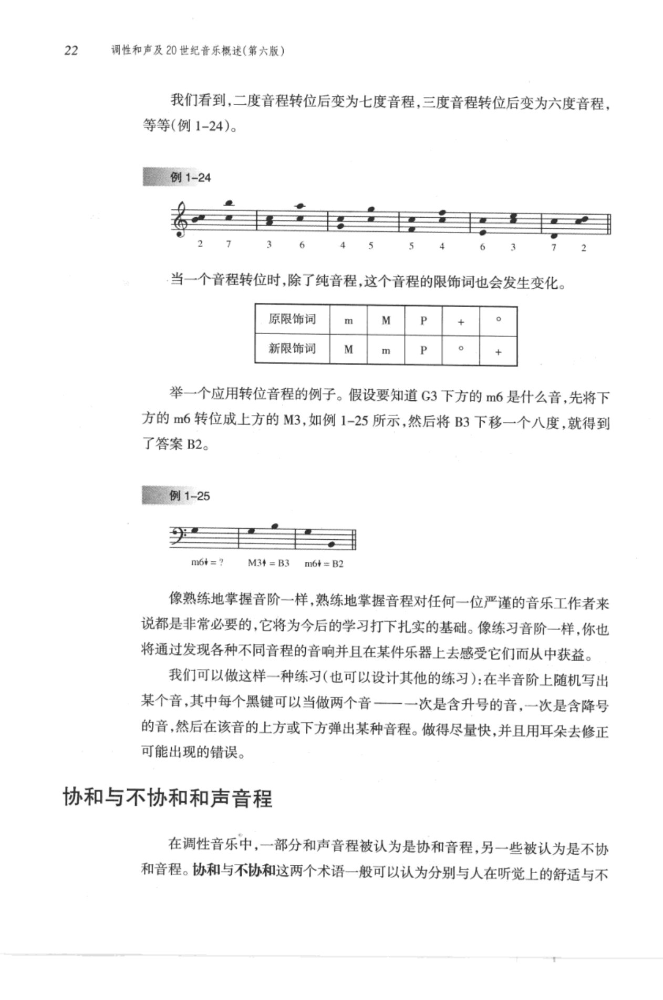
- 论点音程、音高集合与音名拼写 · interval.inversion
手册提炼：音程转位会改变度数，但保持两音的等音音高关系，是拼写、和弦转位与集合运算的共同前提。
调性和声及20世纪音乐概述（第六版）
我们看到，二度音程转位后变为七度音程，三度音程转位后变为六度音程，
等等(例1-24)。
例1-24
6
当一个音程转位时，除了纯音程，这个音程的限饰词也会发生变化。
原限饰词
m
M
P
+
。
新限饰词
M
m
P
举一个应用转位音程的例子。假设要知道G3下方的m6是什么音，先将下
方的m6转位成上方的M3，如例1-25所示，然后将B3下移一个八度，就得到
了答案B2。
例1-25
m6+ = ?
M3=B3m6=B2
像熟练地掌握音阶一样，熟练地掌握音程对任何一位严谨的音乐工作者来
说都是非常必要的，它将为今后的学习打下扎实的基础。像练习音阶一样，你也
将通过发现各种不同音程的音响并且在某件乐器上去感受它们而从中获益。
我们可以做这样一种练习(也可以设计其他的练习)：在半音阶上随机写出
某个音，其中每个黑键可以当做两个音一一一次是含升号的音，一次是含降号
的音，然后在该音的上方或下方弹出某种音程。做得尽量快，并且用耳朵去修正
可能出现的错误。
协和与不协和和声音程
在调性音乐中，一部分和声音程被认为是协和音程，另一些被认为是不协
和音程。协和与不协和这两个术语一般可以认为分别与人在听觉上的舒适与不
PDF p.64
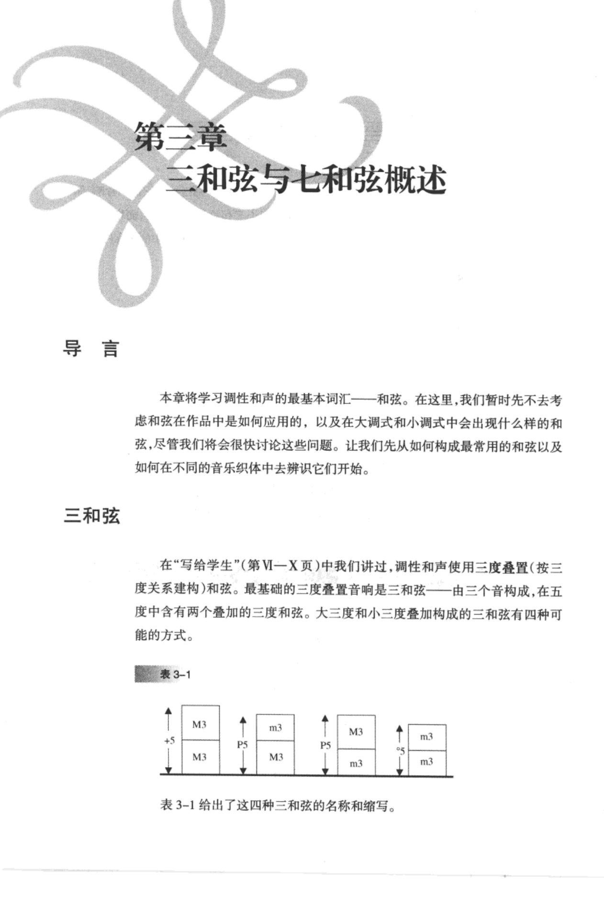
- 论点三和弦与七和弦（前置速查） · triad.construction
手册提炼：三和弦由根音、三音、五音按三度叠置；三度与五度的性质决定大、小、减、增四类结构。
三和弦与七和弦概述
导言
本章将学习调性和声的最基本词汇一一和弦。在这里，我们暂时先不去考
虑和弦在作品中是如何应用的，以及在大调式和小调式中会出现什么样的和
弦，尽管我们将会很快讨论这些问题。让我们先从如何构成最常用的和弦以及
如何在不同的音乐织体中去辨识它们开始。
三和弦
在“写给学生”（第VI一X页）中我们讲过，调性和声使用三度叠置（按三
度关系建构）和弦。最基础的三度叠置音响是三和弦一—由三个音构成，在五
度中含有两个叠加的三度和弦。大三度和小三度叠加构成的三和弦有四种可
能的方式。
表3-1
M3
m3
M3
m3
+5
P5
P5
M3
M3
m3
m3
表3-1给出了这四种三和弦的名称和缩写。
PDF p.68
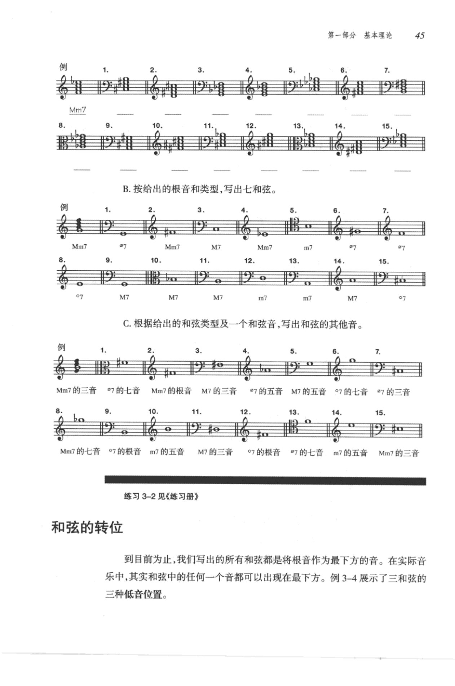
- 论点转位、低音与和声节奏 · inversion.bass-role
手册提炼：低音部不仅是和弦的最低音，还决定原位/转位、功能属性、织体基础与结构位置；分析低音线是判断和声句法的入口。
45
例
Mm7
8.
9
5
B.按给出的根音和类型，写出七和弦。
例
2.
3.
5
Mm7
27
Mm7
M7
Mm7
m7
8
9.
10.
11.
12.
13.
15.
M7
M7
M7
m7
m7
M7
C.根据给出的和弦类型及一个和弦音，写出和弦的其他音。
例
2
3.
5.
6.
7.
Mm7的三音?7的七音
Mm7的根音M7的三音
7的五音M7的五音°7的七音7的三音
9.
10.
11.
12
13.
14.
15.
Mm7的七音o7的根音m7的五音
M7的三音
07的根音7的七音．m7的五音
Mm7的三音
练习3-2见《练习册》
和弦的转位
到目前为止，我们写出的所有和弦都是将根音作为最下方的音。在实际音
乐中，其实和弦中的任何一个音都可以出现在最下方。例3-4展示了三和弦的
三种低音位置。
PDF p.94
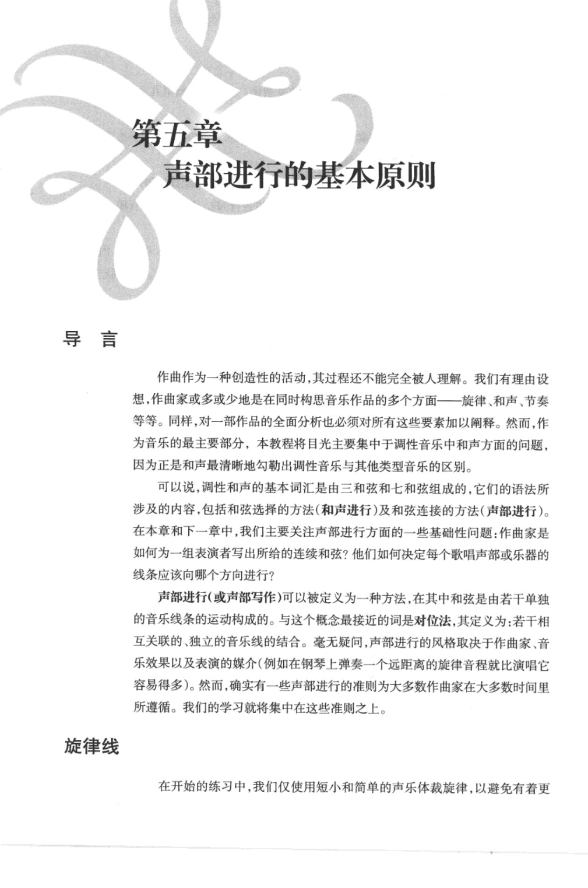
- 代表页教材代表页 · 调性和声概述
手册将本页列为《调性和声概述》代表页；该书定位：从四部和声基础到 20 世纪后调性技法的完整课程，是本项目最系统的结构参照。
声部进行的基本原则
导言
作曲作为一种创造性的活动，其过程还不能完全被人理解。我们有理由设
想，作曲家或多或少地是在同时构思音乐作品的多个方面一旋律、和声、节奏
等等。同样，对一部作品的全面分析也必须对所有这些要素加以阐释。然而，作
为音乐的最主要部分，本教程将目光主要集中于调性音乐中和声方面的问题，
因为正是和声最清晰地勾勒出调性音乐与其他类型音乐的区别。
可以说，调性和声的基本词汇是由三和弦和七和弦组成的，它们的语法所
涉及的内容，包括和弦选择的方法（和声进行）及和弦连接的方法（声部进行）。
在本章和下一章中，我们主要关注声部进行方面的一些基础性问题：作曲家是
如何为一组表演者写出所给的连续和弦？他们如何决定每个歌唱声部或乐器的
线条应该向哪个方向进行？
声部进行（或声部写作）可以被定义为一种方法，在其中和弦是由若干单独
的音乐线条的运动构成的。与这个概念最接近的词是对位法，其定义为：若干相
互关联的、独立的音乐线的结合。毫无疑问，声部进行的风格取决于作曲家、音
乐效果以及表演的媒介（例如在钢琴上弹奏一个远距离的旋律音程就比演唱它
容易得多）。然而，确实有一些声部进行的准则为大多数作曲家在大多数时间里
所遵循。我们的学习就将集中在这些准则之上。
旋律线
在开始的练习中，我们仅使用短小和简单的声乐体裁旋律，以避免有着更
PDF p.103
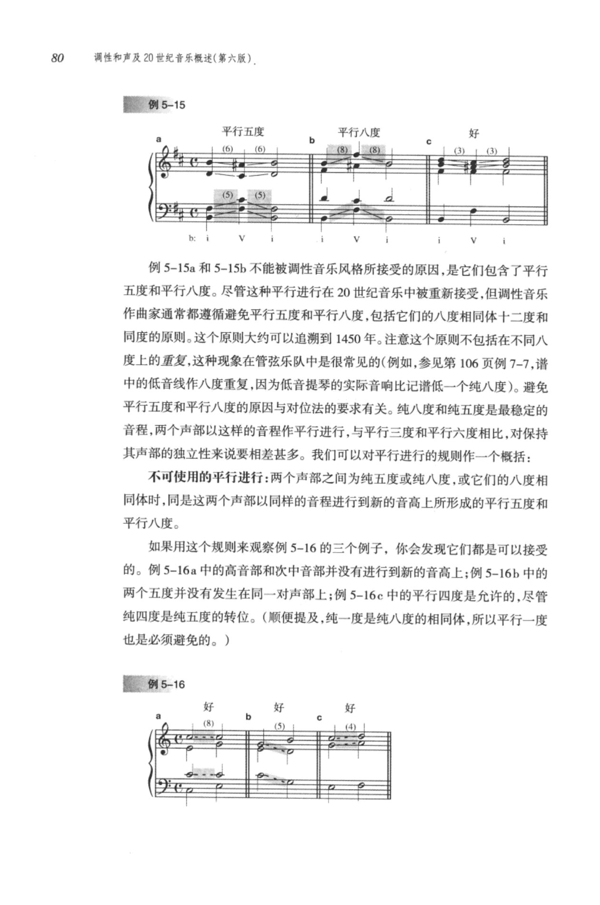
- 论点声部进行与不协和解决 · voice-leading.parallels
手册提炼：平行纯五度、纯八度削弱声部独立性，因此传统调性写作把它们视为需要避免的进行。 - 正文引用手册正文引用
平行纯五度、纯八度：两个声部以相同纯音程同向移动到新的纯音程，会削弱独立性，传统写作中避免。桑桐教程 PDF p.24、柴可夫斯基 PDF p.21、《概述》PDF p.103、斯波索宾上册答案 PDF p.20、徐平力 PDF p.379、桑桐《半音化的历史演进》PDF p.114、佩尔西采蒂 PDF p.68、基泽勒 PDF p.56。 - 代表页教材代表页 · 调性和声概述
手册将本页列为《调性和声概述》代表页；该书定位：从四部和声基础到 20 世纪后调性技法的完整课程，是本项目最系统的结构参照。
调性和声及20世纪音乐概述（第六版）
例5-15
平行五度
平行八度
好
(6)
(6)
(8)
(8)
3
(5)
例5-15a和5-15b不能被调性音乐风格所接受的原因，是它们包含了平行
五度和平行八度。尽管这种平行进行在20世纪音乐中被重新接受，但调性音乐
作曲家通常都遵循避免平行五度和平行八度，包括它们的八度相同体十二度和
同度的原则。这个原则大约可以追溯到1450年。注意这个原则不包括在不同八
度上的重复，这种现象在管弦乐队中是很常见的（例如，参见第106页例7-7，谱
中的低音线作八度重复，因为低音提琴的实际音响比记谱低一个纯八度）。避免
平行五度和平行八度的原因与对位法的要求有关。纯八度和纯五度是最稳定的
音程，两个声部以这样的音程作平行进行，与平行三度和平行六度相比，对保持
其声部的独立性来说要相差甚多。我们可以对平行进行的规则作一个概括：
不可使用的平行进行：两个声部之间为纯五度或纯八度，或它们的八度相
同体时，同是这两个声部以同样的音程进行到新的音高上所形成的平行五度和
平行八度。
如果用这个规则来观察例5-16的三个例子，你会发现它们都是可以接受
的。例5-16a中的高音部和次中音部并没有进行到新的音高上；例5-16b中的
两个五度并没有发生在同一对声部上；例5-16c中的平行四度是允许的，尽管
纯四度是纯五度的转位。（顺便提及，纯一度是纯八度的相同体，所以平行一度
也是必须避免的。）
例5-16
好
好
好
b
C
(8)
（5)
PDF p.112
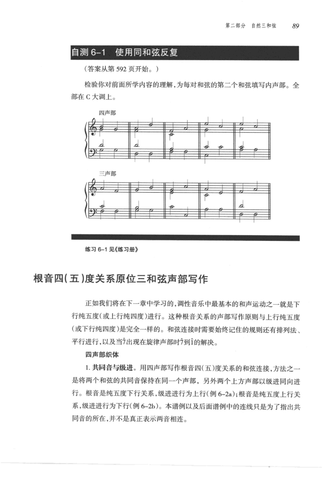
- 论点自然音级功能：T–S–D · root-motion.fourth-up
手册提炼：根音向上四度的进行具有最强的功能推进力；新根音把前一和弦根音纳入自身结构，从听感上提升其功能等级。
89
自测6-1
使用同和弦反复
（答案从第592页开始。）
检验你对前面所学内容的理解，为每对和弦的第二个和弦填写内声部。全
部在C大调上。
四声部
三声部
练习6-1见《练习册》
根音四（五)度关系原位三和弦声部写作
正如我们将在下一章中学习的，调性音乐中最基本的和声运动之一就是下
行纯五度(或上行纯四度)进行。这种根音关系的声部写作原则与上行纯五度
（或下行纯四度）是完全一样的。和弦连接时需要始终记住的规则还有排列法、
平行进行，以及当7出现在旋律声部时7到1的解决。
四声部织体
1.共同音与级进。用四声部写作根音四（五）度关系的和弦连接，方法之一
是将两个和弦的共同音保持在同一个声部，另外两个上方声部以级进同向进
行。根音是纯五度下行关系，级进进行为上行(例6-2a)；根音是纯五度上行关
系，级进进行为下行（例6-2b)。本谱例以及后面谱例中的连线只是为了指出共
同音的所在，并不是真正表示两音相连。
PDF p.118
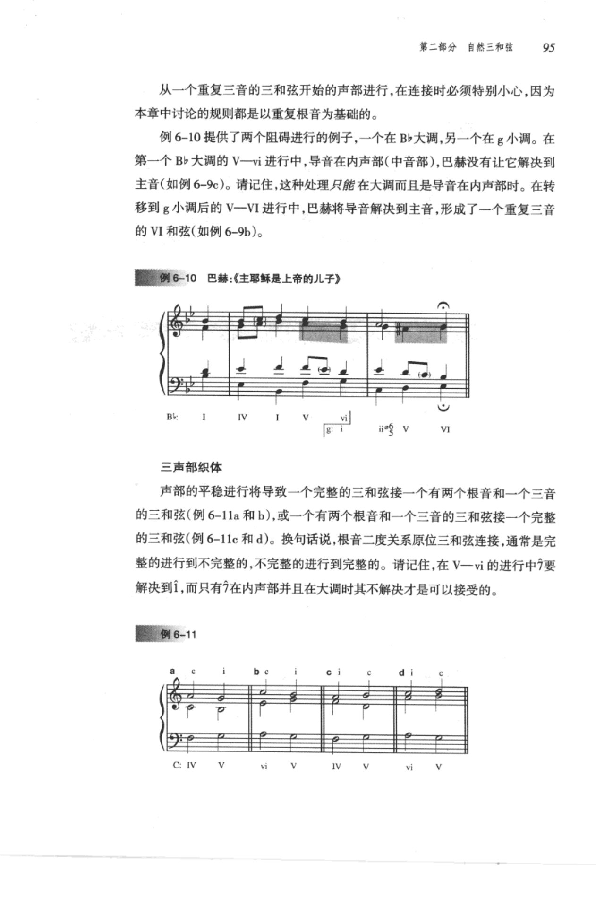
- 论点声部进行与不协和解决 · voice-leading.leading-tone
手册提炼：导音具有上行到主音的强烈倾向；当它位于外声部时，这一解决要求尤其严格。
95
从一个重复三音的三和弦开始的声部进行，在连接时必须特别小心，因为
本章中讨论的规则都是以重复根音为基础的。
例6-10提供了两个阻碍进行的例子，一个在B大调，另一个在g小调。在
第一个Bb大调的V一vi进行中，导音在内声部（中音部），巴赫没有让它解决到
主音(如例6-9c)。请记住，这种处理只能在大调而且是导音在内声部时。在转
移到g小调后的V一VI进行中，巴赫将导音解决到主音，形成了一个重复三音
的VI和弦（如例6-9b）。
例6-10巴赫：《主耶稣是上帝的儿子》
B:
IV
VI
三声部织体
声部的平稳进行将导致一个完整的三和弦接一个有两个根音和一个三音
的三和弦（例6-11a和b），或一个有两个根音和一个三音的三和弦接一个完整
的三和弦（例6-11c和d）。换句话说，根音二度关系原位三和弦连接，通常是完
整的进行到不完整的，不完整的进行到完整的。请记住，在V一vi的进行中7要
解决到1，而只有7在内声部并且在大调时其不解决才是可以接受的。
例6-11
C:IV
IV
PDF p.126
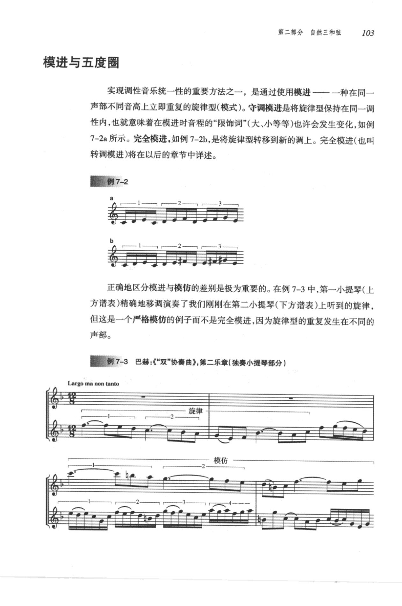
- 论点模进与五度循环 · sequence.modulating
手册提炼：模进可以把同一旋律或和声模式移到不同音高或调上；连续模进既推进音乐，也可作为转调或转调模进的基础。
103
模进与五度圈
实现调性音乐统一性的重要方法之一，是通过使用模进
一一一种在同一
声部不同音高上立即重复的旋律型(模式)。守调模进是将旋律型保持在同一调
性内，也就意味着在模进时音程的“限饰词”（大、小等等）也许会发生变化，如例
7-2a所示。完全模进，如例7-2b，是将旋律型转移到新的调上。完全模进（也叫
转调模进）将在以后的章节中详述。
例7-2
正确地区分模进与模仿的差别是极为重要的。在例7-3中，第一小提琴（上
方谱表）精确地移调演奏了我们刚刚在第二小提琴（下方谱表）上听到的旋律，
但这是一个严格模仿的例子而不是完全模进，因为旋律型的重复发生在不同的
声部。
例7-3巴赫：《“双"协奏曲》，第二乐章（独奏小提琴部分）
Largomanontanto
旋律
模仿
PDF p.168
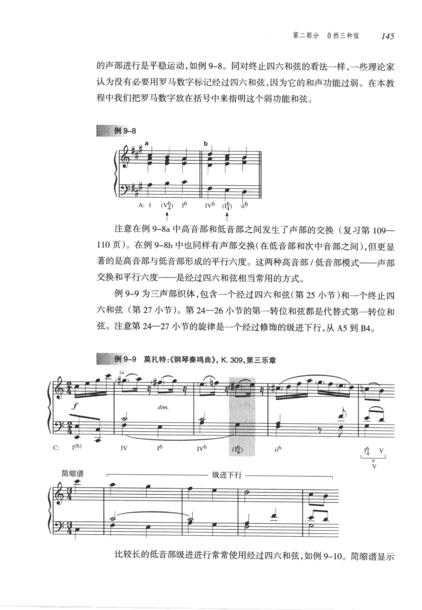
- 论点转位、低音与和声节奏 · inversion.cadential-six-four
手册提炼：终止四六和弦延迟 V 的到来，应处于比其后 V 更强的节奏位置，并以平稳声部进出。
145
的声部进行是平稳运动，如例9-8。同对终止四六和弦的看法一样，一些理论家
认为没有必要用罗马数字标记经过四六和弦，因为它的和声功能过弱。在本教
程中我们把罗马数字放在括号中来指明这个弱功能和弦。
例9-8
16
IV6
SD
注意在例9-8a中高音部和低音部之间发生了声部的交换（复习第109一
110页)。在例9-8b中也同样有声部交换（在低音部和次中音部之间)，但更显
著的是高音部与低音部形成的平行六度。这两种高音部/低音部模式一声部
交换和平行六度一是经过四六和弦相当常用的方式。
例9-9为三声部织体，包含一个经过四六和弦（第25小节)和一个终止四
六和弦（第27小节）。第24—26小节的第一转位和弦都是代替式第一转位和
弦。注意第24一27小节的旋律是一个经过修饰的级进下行，从A5到B4。
例9-9莫扎特：《钢琴奏鸣曲》，K.309，第三乐章
dim.
[(6)
16
IV6
(#)
C:
IV
i6
简缩谱
级进下行
比较长的低音部级进进行常常使用经过四六和弦，如例9-10。简缩谱显示
PDF p.173
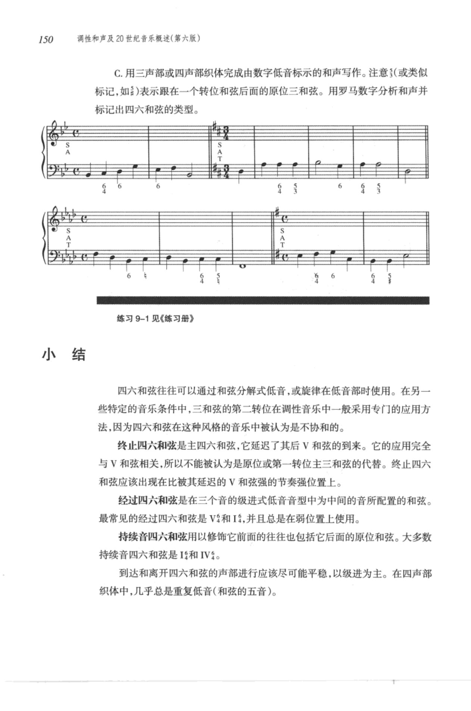
- 论点转位、低音与和声节奏 · inversion.cadential-six-four
手册提炼：终止四六和弦延迟 V 的到来，应处于比其后 V 更强的节奏位置，并以平稳声部进出。 - 正文引用手册正文引用
终止四六应出现在比其后 V 更强的节奏位置，并尽量平稳进出（《概述》PDF p.173）。柴可夫斯基 PDF p.36 则强调原位与转位的“和声精神”不同：转位缺少纯五度支撑，更具前进动力。
150
C.用三声部或四声部织体完成由数字低音标示的和声写作。注意（或类似
标记，如）表示跟在一个转位和弦后面的原位三和弦。用罗马数字分析和声并
标记出四六和弦的类型。
SAT
SAT
T
练习9-1见《练习册》
小结
四六和弦往往可以通过和弦分解式低音，或旋律在低音部时使用。在另一
些特定的音乐条件中，三和弦的第二转位在调性音乐中一般采用专门的应用方
法，因为四六和弦在这种风格的音乐中被认为是不协和的。
终止四六和弦是主四六和弦，它延迟了其后V和弦的到来。它的应用完全
与V和弦相关，所以不能被认为是原位或第一转位主三和弦的代替。终止四六
和弦应该出现在比被其延迟的V和弦强的节奏强位置上。
经过四六和弦是在三个音的级进式低音音型中为中间的音所配置的和弦。
最常见的经过四六和弦是V和I4，并且总是在弱位置上使用。
持续音四六和弦用以修饰它前面的往往也包括它后面的原位和弦。大多数
持续音四六和弦是I4和IV4。
到达和离开四六和弦的声部进行应该尽可能平稳，以级进为主。在四声部
织体中，几乎总是重复低音（和弦的五音）。
PDF p.174
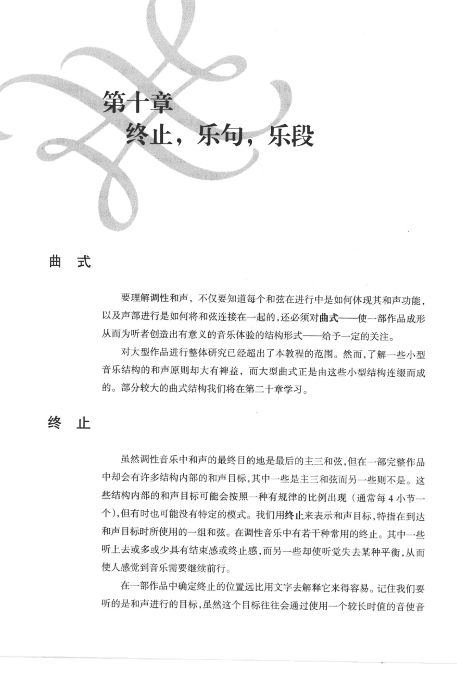
- 论点终止式 · cadence.pac-iac
手册提炼：完满正格终止由原位属到原位主、且主音位于最高声部构成；其余 V–I 多为不完满正格终止。 - 正文引用手册正文引用
终止式由功能张力、低音、旋律位置、节拍强位、前文准备共同决定。相同的 V–I 在乐句内部可能只是经过，在段落结尾才成为终止；并非所有 V–I 都是终止式（《概述》PDF p.174、p.184）。 - 代表页教材代表页 · 调性和声概述
手册将本页列为《调性和声概述》代表页；该书定位：从四部和声基础到 20 世纪后调性技法的完整课程，是本项目最系统的结构参照。
终止，乐句，乐段
曲式
要理解调性和声，不仅要知道每个和弦在进行中是如何体现其和声功能，
以及声部进行是如何将和弦连接在一起的，还必须对曲式一使一部作品成形
从而为听者创造出有意义的音乐体验的结构形式一一给予一定的关注。
对大型作品进行整体研究已经超出了本教程的范围。然而，了解一些小型
音乐结构的和声原则却大有神益，而大型曲式正是由这些小型结构连缀而成
的。部分较大的曲式结构我们将在第二十章学习。
终止
虽然调性音乐中和声的最终目的地是最后的主三和弦，但在一部完整作品
中却会有许多结构内部的和声目标，其中一些是主三和弦而另一些则不是。这
些结构内部的和声目标可能会按照一种有规律的比例出现（通常每4小节一
个），但有时也可能没有特定的模式。我们用终止来表示和声目标，特指在到达
和声目标时所使用的一组和弦。在调性音乐中有若干种常用的终止。其中一些
听上去或多或少具有结束感或终止感，而另一些却使听觉失去某种平衡，从而
使人感觉到音乐需要继续前行。
在一部作品中确定终止的位置远比用文字去解释它来得容易。记住我们要
听的是和声进行的目标，虽然这个目标往往会通过使用一个较长时值的音使音
PDF p.176
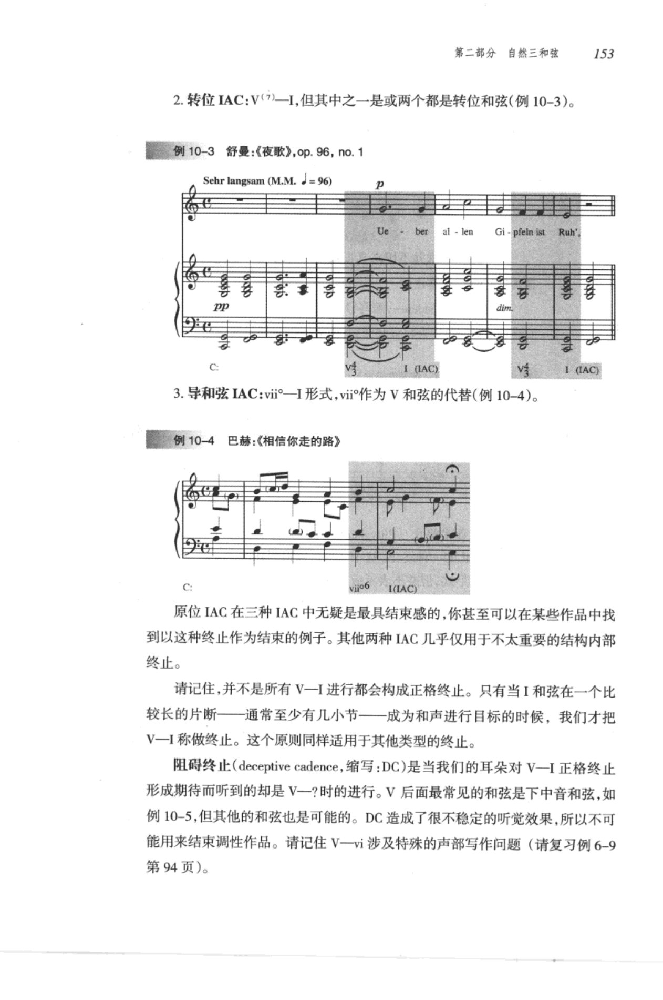
- 论点终止式 · cadence.half-plagal-deceptive
手册提炼：半终止停在属功能，变格终止为 IV–I，阻碍进行为 V–vi；三者收束强度与结构作用不同。
153
2.转位IAC：V(7）—I,但其中之一是或两个都是转位和弦（例10-3)。
例10-3舒曼：《夜歌》，op.96，no.1
Sehr langsam (M.M. J= 96)
p
Ue.
al -len
Gi-pfeln istRuh',
pp
dim.
(IAC)
I(IAC)
3.导和弦IAC：vii—I形式，vii作为V和弦的代替（例10-4)。
例10-4巴赫：《相信你走的路》
vijo6
I(IAC)
原位IAC在三种IAC中无疑是最具结束感的，你甚至可以在某些作品中找
到以这种终止作为结束的例子。其他两种IAC几乎仅用于不太重要的结构内部
终止。
请记住，并不是所有V—I进行都会构成正格终止。只有当I和弦在一个比
较长的片断—通常至少有几小节——成为和声进行目标的时候，我们才把
V一I称做终止。这个原则同样适用于其他类型的终止。
阻碍终止（deceptivecadence，缩写：DC)是当我们的耳朵对V—I正格终止
形成期待而听到的却是V—？时的进行。V后面最常见的和弦是下中音和弦，如
例10-5，但其他的和弦也是可能的。DC造成了很不稳定的听觉效果，所以不可
能用来结束调性作品。请记住V一vi涉及特殊的声部写作问题（请复习例6-9
第94页）。
PDF p.178
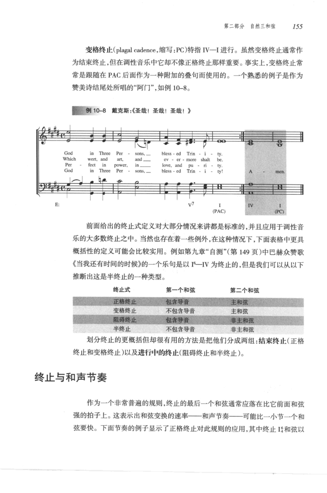
- 论点终止式 · cadence.half-plagal-deceptive
手册提炼：半终止停在属功能，变格终止为 IV–I，阻碍进行为 V–vi；三者收束强度与结构作用不同。
155
变格终止（plagalcadence,缩写：PC)特指IV一I进行。虽然变格终止通常作
为结束终止，但在调性音乐中它却不像正格终止那样重要。事实上，变格终止常
常是跟随在PAC后面作为一种附加的叠句而使用的。一个熟悉的例子是作为
赞美诗结尾处所唱的“阿门”，如例10-8。
例10-8戴克斯：《圣哉！圣哉！圣哉！》
God
in Three
Trin-i-ty.
Per
sons,
bless-ed
Which
wert, and
art,
and
cr-moreshaltbe.
Per
fect
in
power,
in
God
inThreePer ·sons,
bless-ed Trin -i-ty!
men.
E:
I
IV
I
(PAC)
(PC)
前面给出的终止式定义对大部分情况来讲都是标准的，并且应用于调性音
乐的大多数终止之中。当然也存在着一些例外，在这种情况下，下面表格中更具
概括性的定义可能会比较实用。例如第九章“自测”（第149页)中巴赫众赞歌
《当我还有时间的时候》的一个乐句是以I—IV为终止的，但是我们可以从以下
推断出这是半终止的一种类型。
终止式
第一个和弦
第二个和弦
正格终止
包含导音
主和弦
变格终止
不包含导音
主和弦
阻碍终止
包含导音
非主和弦
半终止
非主和弦
不包含导音
划分终止的更概括但却很有用的方法是把他们分成两组：结束终止（正格
终止和变格终止）以及进行中的终止（阻碍终止和半终止）。
终止与和声节奏
作为一个非常普遍的规则，终止的最后一个和弦通常应落在比它前面和弦
强的拍子上。这表示出和弦变换的速率—和声节奏一—可能比一小节一个和
弦要快。下面节奏的例子显示了正格终止对此规则的应用，其中终止I和弦以
PDF p.184
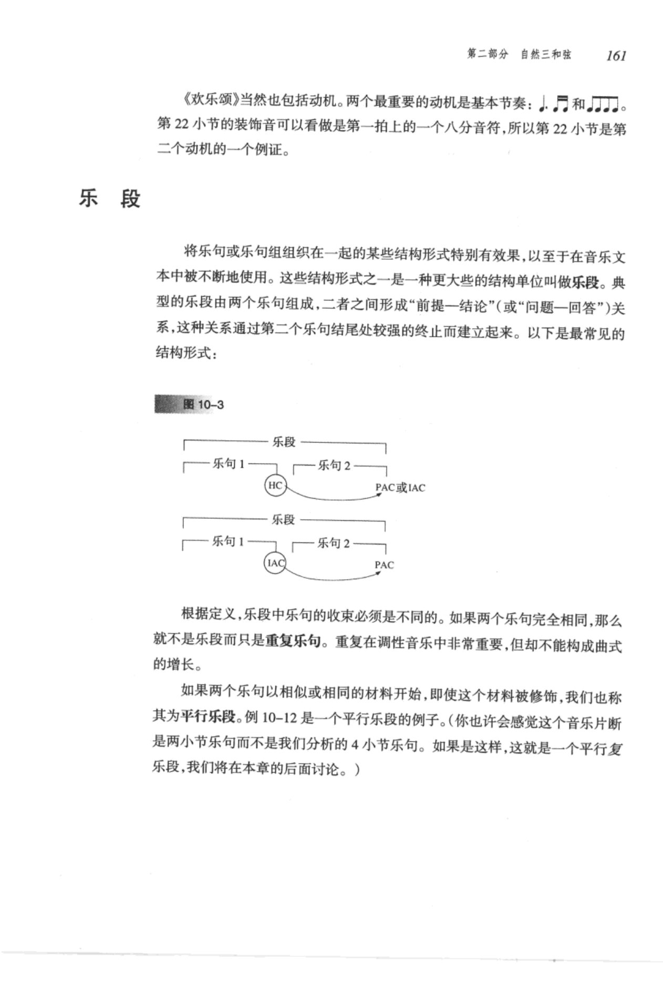
- 论点终止式 · cadence.phrase-pair
手册提炼：典型乐段由两个终止强度不同的乐句构成，常见布局为 HC→PAC/IAC 或 IAC→PAC。 - 正文引用手册正文引用
终止式由功能张力、低音、旋律位置、节拍强位、前文准备共同决定。相同的 V–I 在乐句内部可能只是经过，在段落结尾才成为终止；并非所有 V–I 都是终止式（《概述》PDF p.174、p.184）。 - 正文引用手册正文引用
典型乐段由两个乐句构成“前提—结论”关系：第一句常停在 HC 或 IAC，第二句以 PAC 收束（《概述》PDF p.184）。如果两句终止强度相同，结构上更像重复乐句而非真正的乐段。奏鸣曲式进一步把这种开合扩大为呈示部、展开部、再现部的调性冲突与解决（PDF p.353）。 - 代表页教材代表页 · 调性和声概述
手册将本页列为《调性和声概述》代表页；该书定位：从四部和声基础到 20 世纪后调性技法的完整课程，是本项目最系统的结构参照。
161
《欢乐颂》当然也包括动机。两个最重要的动机是基本节奏：」和丁。
第22小节的装饰音可以看做是第一拍上的一个八分音符，所以第22小节是第
二个动机的一个例证。
乐段
将乐句或乐句组组织在一起的某些结构形式特别有效果，以至于在音乐文
本中被不断地使用。这些结构形式之一是一种更大些的结构单位叫做乐段。典
型的乐段由两个乐句组成，二者之间形成“前提一结论”（或“问题一回答”）关
系，这种关系通过第二个乐句结尾处较强的终止而建立起来。以下是最常见的
结构形式：
图10-3
乐段
乐句1
乐句2
HC
PAC或IAC
乐段
乐句1
乐句2
IAC
PAC
根据定义，乐段中乐句的收束必须是不同的。如果两个乐句完全相同，那么
就不是乐段而只是重复乐句。重复在调性音乐中非常重要，但却不能构成曲式
的增长。
如果两个乐句以相似或相同的材料开始，即使这个材料被修饰，我们也称
其为平行乐段。例10-12是一个平行乐段的例子。（你也许会感觉这个音乐片断
是两小节乐句而不是我们分析的4小节乐句。如果是这样，这就是一个平行复
乐段，我们将在本章的后面讨论。）
PDF p.218
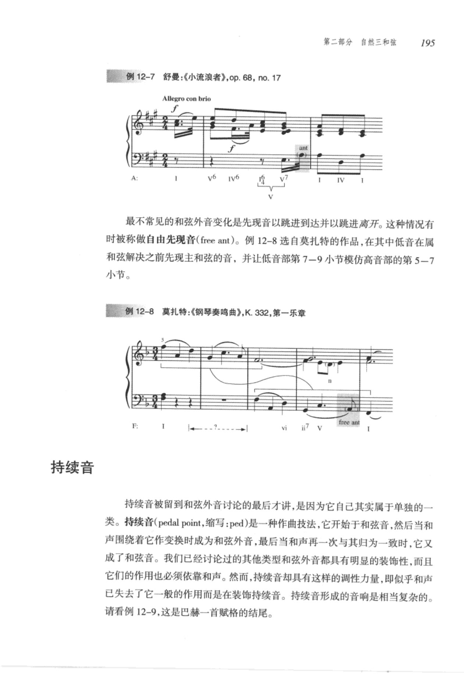
- 论点延长、层次与曲式 · prolongation.sustained-dominant
手册提炼：属持续音把属功能保持在同一低音上，常用于再现前的属准备，延迟并强化结构回归。
195
例12-7舒曼：《小流浪者》，op.68，no.17
Allegroconbrio
IV6
IV
最不常见的和弦外音变化是先现音以跳进到达并以跳进离开。这种情况有
时被称做自由先现音（freeant）。例12-8选自莫扎特的作品，在其中低音在属
和弦解决之前先现主和弦的音，并让低音部第7-9小节模仿高音部的第5-7
小节。
例12-8莫扎特：《钢琴奏鸣曲》，K.332，第一乐章
freeant
ii7
持续音
持续音被留到和弦外音讨论的最后才讲，是因为它自己其实属于单独的一
类。持续音(pedalpoint,缩写：ped)是一种作曲技法，它开始于和弦音，然后当和
声围绕着它作变换时成为和弦外音，最后当和声再一次与其归为一致时，它又
成了和弦音。我们已经讨论过的其他类型和弦外音都具有明显的装饰性，而且
它们的作用也必须依靠和声。然而，持续音却具有这样的调性力量，即似乎和声
已失去了它一般的作用而是在装饰持续音。持续音形成的音响是相当复杂的。
请看例12-9，这是巴赫一首赋格的结尾。
PDF p.229
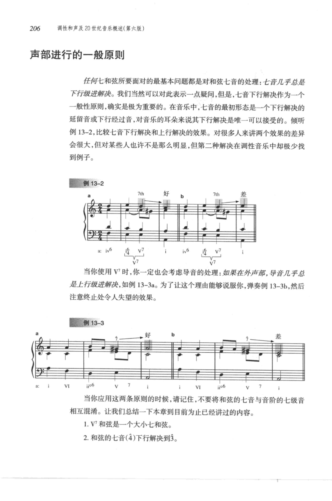
- 论点属功能与属七解决 · dominant.v7-resolution
手册提炼：属七解决的基本声部规则是导音上行到主音、七音下行到三级；外声部导音尤其应上行。 - 案例手册案例 C01 · 属七七音：下行级进解决
例13-2｜四声部教材模型
原书要点：七音几乎总下行级进解决；上行解决虽可弹，却在调性语料中极罕见。
机制：属七的七音与主和弦三音相差半音；七音下行解决时，半音级进把未完成的和声张力收束到主和弦。
读谱：只盯 V7 的七音（4）到主和弦三音（3）的级进；导音（7）若在外声部，再另看它是否上行到 1。
用法：写终止时先确定 4→3，再安排 7→1；若声部冲突，改排列或转位，保留七音下行。 - 正文引用手册正文引用
这些规则分别见《调性和声及20世纪音乐概述》PDF p.229–230、p.402–403，以及柴可夫斯基 PDF p.46。 - 代表页教材代表页 · 调性和声概述
手册将本页列为《调性和声概述》代表页；该书定位：从四部和声基础到 20 世纪后调性技法的完整课程，是本项目最系统的结构参照。
调性和声及20世纪音乐概述（第六版）
声部进行的一般原则
任何七和弦所要面对的最基本问题都是对和弦七音的处理：七音几乎总是
下行级进解决。我们当然可以对此表示一点疑问，但是，七音下行解决作为一个
一般性原则，确实是极为重要的。在音乐中，七音的最初形态是一个下行解决的
延留音或下行经过音，对音乐的耳朵来说其下行解决是唯一可以接受的。倾听
例13-2，比较七音下行解决和上行解决的效果。对很多人来讲两个效果的差异
会很大，但对某些人也许不是那么明显，但第二种解决在调性音乐中却极少找
到例子。
例13-2
7th
好
差
7th
iv6
当你使用V7时，你一定也会考虑导音的处理：如果在外声部，导音几乎总
是上行级进解决，如例13-3a。为了让这个理由能够说服你，弹奏例13-3b，然后
注意终止处令人失望的效果。
例13-3
好
差
VI
ijo6
ijo6
VI
当你应用这两条原则的时候，请记住，不要将和弦的七音与音阶的七级音
相互混淆。让我们总结一下本章到目前为止已经讲过的内容。
1.V和弦是一个大小七和弦。
2.和弦的七音（4)下行解决到3。
PDF p.230
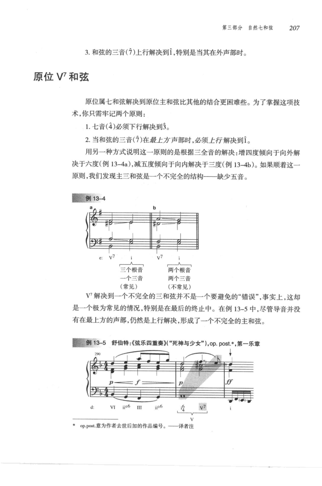
- 论点属功能与属七解决 · dominant.tritone-resolution
手册提炼：属七中的三全音按增四度向外、减五度向内收缩，分别解决到主和弦的六度或三度。 - 案例手册案例 C02 · 不完全主和弦：省略五音仍完成终止
例13-5｜舒伯特《弦乐四重奏》“死神与少女”第一乐章
原书要点：V7 解决到省略五音的主三和弦在终止中很常见；导音仍上行解决。
机制：终止的完成感由 4→3、7→1 的解决建立；主和弦省略五音、重复根音，可以避免声部反向。
读谱：看 V7 到 i 的最后一步：导音是否上行到主音、七音是否下行到三音，主和弦是否省五音并重复根音。
用法：四声部终止若补全会迫使某声部反向，可省五音、重复根音；保留 4→3 与 7→1 的方向。
207
3.和弦的三音(7)上行解决到1,特别是当其在外声部时。
原位 V7和弦
原位属七和弦解决到原位主和弦比其他的结合更困难些。为了掌握这项技
术，你只需牢记两个原则：
1.七音(4)必须下行解决到3。
2.当和弦的三音(7)在最上方声部时，必须上行解决到1。
用另一种方式说明这一原则的是根据三全音的解决：增四度倾向于向外解
决于六度（例13-4a），减五度倾向于向内解决于三度（例13-4b)。如果顺着这一
原则，我们发现主三和弦是一个不完全的结构一——缺少五音。
例13-4
三个根音
两个根音
一个三音
两个三音
（常见）
（不常见）
V7解决到一个不完全的三和弦并不是一个要避免的“错误”，事实上，这却
是一个极为常见的情况，特别是在最后的终止中。在例13-5中，尽管导音并没
有在最上方的声部，仍然是上行解决，形成了一个不完全的主和弦。
例13-5舒伯特：《弦乐四重奏》（“死神与少女”），op.post.*，第一乐章
290
f
ijo6
d:
VI
ijo6
IⅢI
！
op.post.意为作者去世后加的作品编号。一译者注
PDF p.231
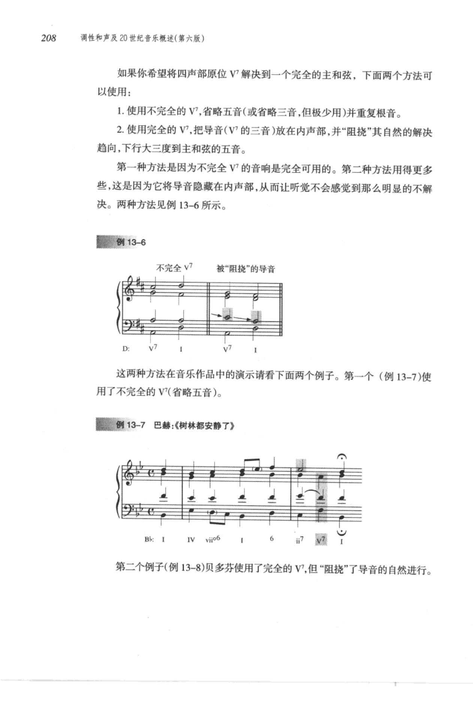
- 案例手册案例 C03 · 省五音属七：保留导音级进
例13-7｜巴赫《树林都安静了》
原书要点：巴赫用省略五音、重复根音的不完全 V7 进入完全主和弦。
机制：完全主和弦要求导音上行到主音；省略属七五音并重复根音，可减少声部挤压，保留 7→1 与 4→3。
读谱：看 V7 是否省五音并重复根音；再看进入 I 时七音是否到三音、导音是否到主音。
用法：需要完全主和弦时，可先试“省 V7 五音、重复根音”；不要重复导音或让导音跳进。
调性和声及20世纪音乐概述（第六版）
如果你希望将四声部原位V7解决到一个完全的主和弦，下面两个方法可
以使用：
1.使用不完全的V，省略五音（或省略三音，但极少用)并重复根音。
2.使用完全的V”，把导音（V”的三音）放在内声部，并“阻挠"其自然的解决
趋向，下行大三度到主和弦的五音。
第一种方法是因为不完全V7的音响是完全可用的。第二种方法用得更多
些，这是因为它将导音隐藏在内声部，从而让听觉不会感觉到那么明显的不解
决。两种方法见例13-6所示。
例13-6
不完全V7
被“阻挠”的导音
D:
这两种方法在音乐作品中的演示请看下面两个例子。第一个（例13-7)使
用了不完全的V(省略五音）。
例13-7巴赫：《树林都安静了》
B:I
IV
vijo6
i7
第二个例子（例13-8)贝多芬使用了完全的V，但“阻挠”了导音的自然进行。
PDF p.273
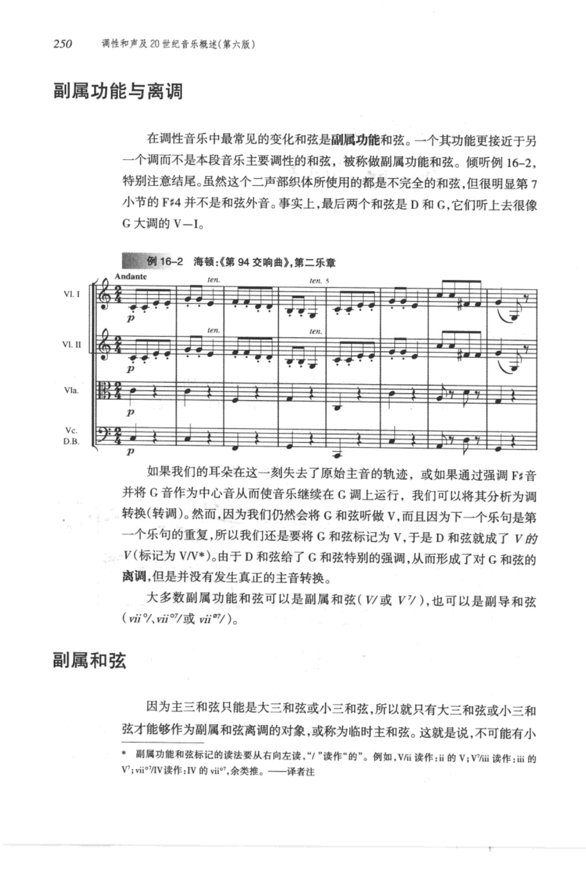
- 论点副属和弦与离调 · secondary-dominant.definition
手册提炼：副属和弦把调内某一大三或小三和弦临时当主，以 V/x 或 vii°/x 加强它而不改变全局主调。 - 代表页教材代表页 · 调性和声概述
手册将本页列为《调性和声概述》代表页；该书定位：从四部和声基础到 20 世纪后调性技法的完整课程，是本项目最系统的结构参照。
调性和声及20世纪音乐概述（第六版）
副属功能与离调
在调性音乐中最常见的变化和弦是副属功能和弦。一个其功能更接近于另
一个调而不是本段音乐主要调性的和弦，被称做副属功能和弦。倾听例16-2,
特别注意结尾。虽然这个二声部织体所使用的都是不完全的和弦，但很明显第7
小节的F4并不是和弦外音。事实上，最后两个和弦是D和G，它们听上去很像
G大调的V一I。
例16-2海顿：《第94交响曲》，第二乐章
Andante
ten.
ten.5
V1.I
fen.
ten.
V1.II
Vla.
Vc.
D.B.
p
如果我们的耳朵在这一刻失去了原始主音的轨迹，或如果通过强调F#音
并将G音作为中心音从而使音乐继续在G调上运行，我们可以将其分析为调
转换（转调）。然而，因为我们仍然会将G和弦听做V，而且因为下一个乐句是第
一个乐句的重复，所以我们还是要将G和弦标记为V，于是D和弦就成了V的
V（标记为V/V*）由于D和弦给了G和弦特别的强调，从而形成了对G和弦的
离调，但是并没有发生真正的主音转换。
（vii%vii/或vii7/）。
副属和弦
因为主三和弦只能是大三和弦或小三和弦，所以就只有大三和弦或小三和
弦才能够作为副属和弦离调的对象，或称为临时主和弦。这就是说，不可能有小
*副属功能和弦标记的读法要从右向左读，“/"读作“的”。例如，V/i读作：i的V；V7/i读作：运的
V”；vii7/IV读作：IV的vi，余类推。一译者注
PDF p.274
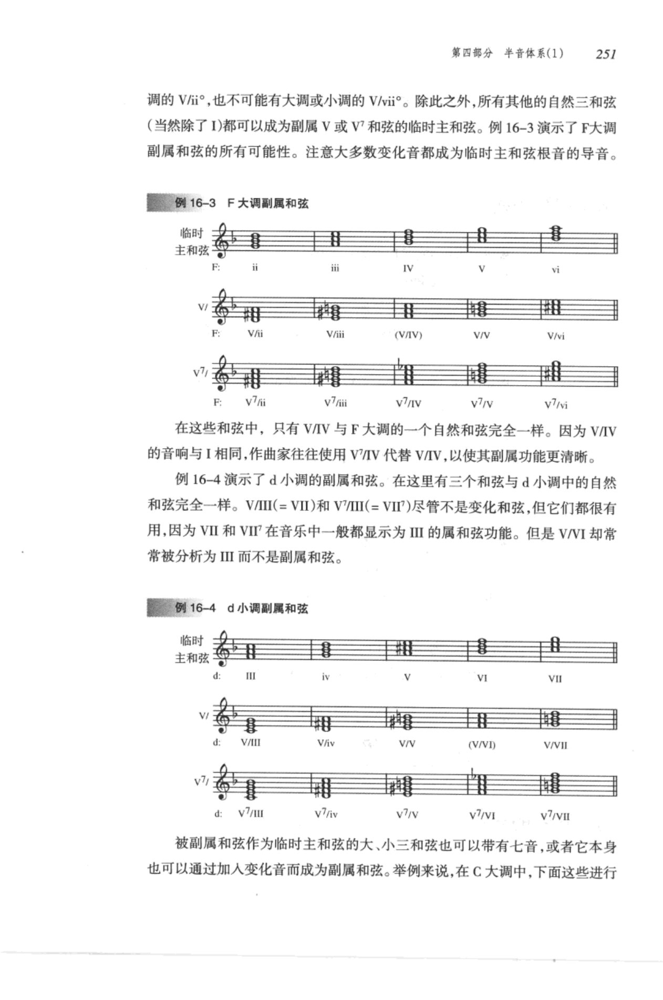
- 论点副属和弦与离调 · secondary-dominant.targets
手册提炼：除主和弦外，调内自然大三、小三和弦都可成为副属或副属七的临时主和弦。 - 论点副属和弦与离调 · secondary-dominant.usage
手册提炼：副属和弦可用于任何能被自然音级目标和弦接收的位置，但实际用法受根音进行与不协和音处理约束。
251
调的Vi°，也不可能有大调或小调的V/vii°。除此之外，所有其他的自然三和弦
（当然除了1)都可以成为副属V或V7和弦的临时主和弦。例16-3演示了F大调
副属和弦的所有可能性。注意大多数变化音都成为临时主和弦根音的导音。
例16-3F大调副属和弦
临时
喜
喜
主和弦
F:
ii
ii
IV
V
vi
8
V/i
V/i
(V/IV)
V/V
V/vi
v7/i
v7/ii
v7/IV
F:
v7/v
v7/vi
在这些和弦中，只有V/IV与F大调的一个自然和弦完全一样。因为V/IV
的音响与I相同，作曲家往往使用V/IV代替V/IV，以使其副属功能更清晰。
例16-4演示了d小调的副属和弦。在这里有三个和弦与d小调中的自然
和弦完全一样。V/III(=VII)和V7/III(=VII)尽管不是变化和弦，但它们都很有
用，因为VII和VII在音乐中一般都显示为ⅢI的属和弦功能。但是V/VI却常
常被分析为IⅢI而不是副属和弦。
例16-4d小调副属和弦
临时
8
喜
主和弦
d:
IⅢI
iv
VI
VII
喜
d:
III/A
V/iv
V/V
(V/VI)
V/VII
d:v7/ml
AA
v7/v
v7/vI
v7/vIl
被副属和弦作为临时主和弦的大、小三和弦也可以带有七音，或者它本身
也可以通过加人变化音而成为副属和弦。举例来说，在C大调中，下面这些进行
PDF p.312
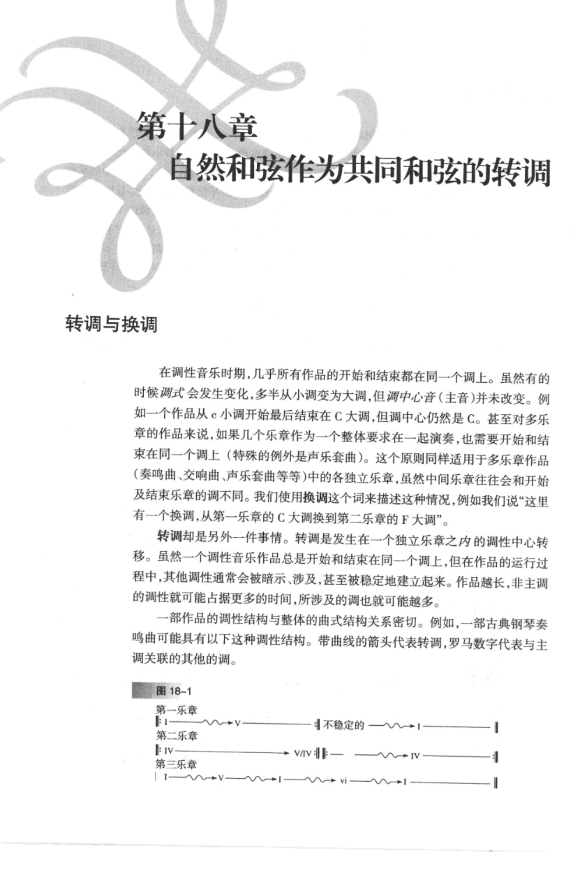
- 论点转调体系：类型、距离与确认 · modulation.confirmation
手册提炼：转调必须由新调的和声进行与终止式确认；短促强调或单一副属和弦通常只是离调。
自然和弦作为共同和弦的转调
转调与换调
在调性音乐时期，几乎所有作品的开始和结束都在同一个调上。虽然有的
时候调式会发生变化，多半从小调变为大调，但调中心音（主音）并未改变。例
如一个作品从c小调开始最后结束在C大调，但调中心仍然是C。甚至对多乐
章的作品来说，如果几个乐章作为一个整体要求在一起演奏，也需要开始和结
束在同一个调上（特殊的例外是声乐套曲）。这个原则同样适用于多乐章作品
（奏鸣曲、交响曲、声乐套曲等等）中的各独立乐章，虽然中间乐章往往会和开始
及结束乐章的调不同。我们使用换调这个词来描述这种情况，例如我们说“这里
有一个换调，从第一乐章的C大调换到第二乐章的F大调”。
转调却是另外一件事情。转调是发生在一个独立乐章之内的调性中心转
移。虽然一个调性音乐作品总是开始和结束在同一个调上，但在作品的运行过
程中，其他调性通常会被暗示、涉及，甚至被稳定地建立起来。作品越长，非主调
的调性就可能占据更多的时间，所涉及的调也就可能越多。
一部作品的调性结构与整体的曲式结构关系密切。例如，一部古典钢琴奏
鸣曲可能具有以下这种调性结构。带曲线的箭头代表转调，罗马数字代表与主
调关联的其他的调。
图18-1
第一乐章
1
不稳定的→
第二乐章
IV
V/IV：:
第三乐章
1→V→
PDF p.313
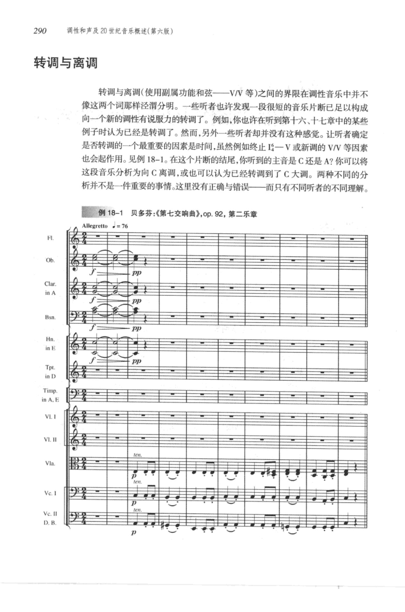
- 论点临时主音化（离调） · tonicization.time-structure
手册提炼：离调与转调的界限主要取决于持续时间、结构位置与终止确认；单靠一个变化和弦不能判定转调。 - 正文引用手册正文引用
时间是最重要的因素之一（《概述》PDF p.313）；桑桐 PDF p.178 则把结构位置与终止确认作为区分离调、交替、转调的关键。实际作品中存在连续过渡，分析应说明证据强弱，而不是强行二选一。 - 代表页教材代表页 · 调性和声概述
手册将本页列为《调性和声概述》代表页；该书定位：从四部和声基础到 20 世纪后调性技法的完整课程，是本项目最系统的结构参照。
调性和声及20世纪音乐概述（第六版）
转调与离调
转调与离调（使用副属功能和弦一一V/V等）之间的界限在调性音乐中并不
像这两个词那样泾渭分明。一些听者也许发现一段很短的音乐片断已足以构成
向一个新的调性有说服力的转调了。例如，你也许在听到第十六、十七章中的某些
例子时认为已经是转调了。然而，另外一些听者却并没有这种感觉。让听者确定
是否转调的一个最重要的因素是时间，虽然例如终止I一V或新调的V/V等因素
也会起作用。见例18-1。在这个片断的结尾，你听到的主音是C还是A？你可以将
这段音乐分析为向C离调，或也可以认为已经转调到了C大调。两种不同的分
析并不是一件重要的事情。这里没有正确与错误一而只有不同听者的不同理解。
例18-1贝多芬：《第七交响曲》，op.92，第二乐章
AllegrettoJ=76
Fl.
Ob.
pp
Clar.
in A
pp
Bsn.
pp
Hn.
in E
p
Tpt.
in D
Timp.
in A,E
V1. 1
V1.1I
en
Vla.
p
ter.
Vc.
ten
Vc.II
D,B.
p
PDF p.316
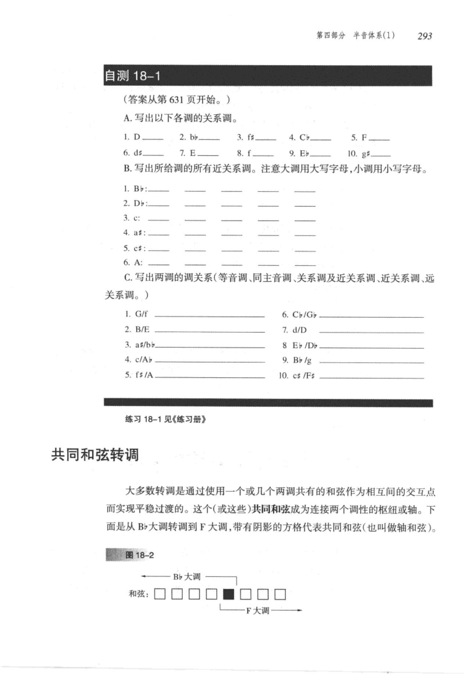
- 论点中介和弦与转调 · pivot.common-chord
手册提炼：中介和弦转调以两调共有的和弦为连接点；同一音集从旧调功能重释为新调功能，再由新调的属—主或终止式确认。 - 正文引用手册正文引用
《概述》PDF p.316–317 用共同和弦连接两个调，并指出任何两个近关系调至少有一个共同自然三和弦，远关系调则不一定。中介转调要求同一和弦在旧调与新调中承担不同功能；仅找到同音和弦还不够。 - 代表页教材代表页 · 调性和声概述
手册将本页列为《调性和声概述》代表页；该书定位：从四部和声基础到 20 世纪后调性技法的完整课程，是本项目最系统的结构参照。
293
自测18-1
（答案从第631页开始。）
A.写出以下各调的关系调。
1.D
2.bb
3.f#。
4.Cb
5.F
6.d#
7.E
8.f.
9.Eb
10.g#
B.写出所给调的所有近关系调。注意大调用大写字母，小调用小写字母。
1.B:
2.D:
3. c:
4. a:
5.c#:
6.A:
C.写出两调的调关系（等音调、同主音调、关系调及近关系调、近关系调、远
关系调。）
1. G/f
4/49
2.B/E
7.d/D
3.a#/bb
8E/D
4.c/Ab
9.Bb/g
5.f#/A
10.C#/F#
练习18-1见《练习册》
共同和弦转调
大多数转调是通过使用一个或几个两调共有的和弦作为相互间的交互点
而实现平稳过渡的。这个(或这些)共同和弦成为连接两个调性的枢纽或轴。下
面是从B大调转调到F大调，带有阴影的方格代表共同和弦(也叫做轴和弦)。
图18-2
Bb大调
和弦：口口口
F大调
PDF p.317
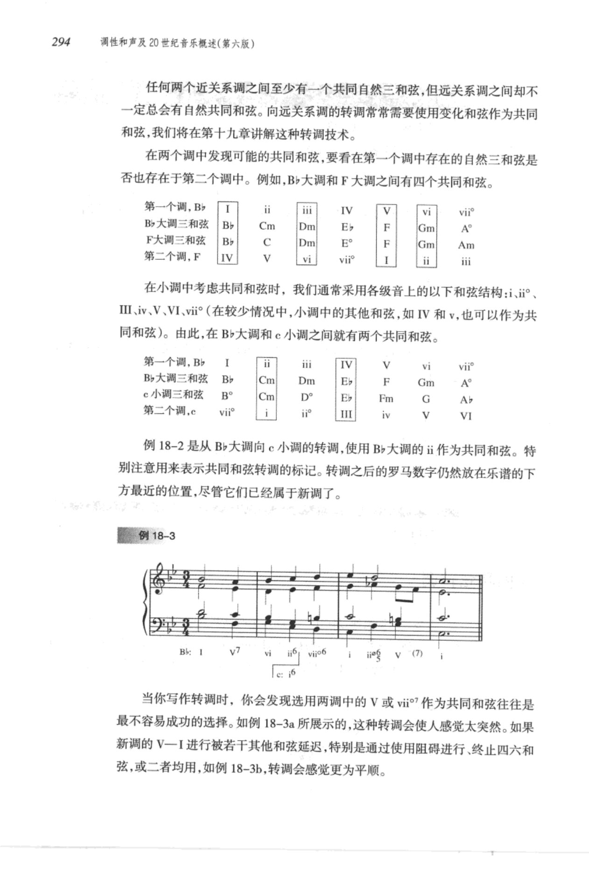
- 论点中介和弦与转调 · pivot.common-chord
手册提炼：中介和弦转调以两调共有的和弦为连接点；同一音集从旧调功能重释为新调功能，再由新调的属—主或终止式确认。
调性和声及20世纪音乐概述（第六版）
任何两个近关系调之间至少有一个共同自然三和弦，但远关系调之间却不
一定总会有自然共同和弦。向远关系调的转调常常需要使用变化和弦作为共同
和弦，我们将在第十九章讲解这种转调技术。
在两个调中发现可能的共同和弦，要看在第一个调中存在的自然三和弦是
否也存在于第二个调中。例如，B大调和F大调之间有四个共同和弦。
第一个调，B
I
ii
ifi
IV
V
vi
vii°
B大调三和弦
B
Cm
Dm
Eb
F
Gm
A°
F大调三和弦
B
C
Dm
E°
F
Gm
Am
第二个调，F
IV
V
vi
viio
ii
ii
在小调中考虑共同和弦时，我们通常采用各级音上的以下和弦结构：i、i°、
III、iv、V、VI、vi°（在较少情况中，小调中的其他和弦，如IV和v,也可以作为共
同和弦)。由此，在Bb大调和c小调之间就有两个共同和弦。
第一个调，Bb
I
ii
ii
TV
V
vi
vii°
B大调三和弦
Bb
Cm
Dm
Eb
F
Gm
A°
c小调三和弦
B°
Cm
D°
E
Fm
D
Ab
第二个调，c
viio
i
ia
III
iv
V
VI
例18-2是从Bb大调向c小调的转调，使用Bb大调的i作为共同和弦。特
别注意用来表示共同和弦转调的标记。转调之后的罗马数字仍然放在乐谱的下
方最近的位置，尽管它们已经属于新调了。
例18-3
B:1
v7
ij6
vi
vijo6
iieg
(7)
c: j6
当你写作转调时，你会发现选用两调中的V或vii作为共同和弦往往是
最不容易成功的选择。如例18-3a所展示的，这种转调会使人感觉太突然。如果
新调的V一I进行被若干其他和弦延迟，特别是通过使用阻碍进行、终止四六和
弦，或二者均用，如例18-3b，转调会感觉更为平顺。
PDF p.328
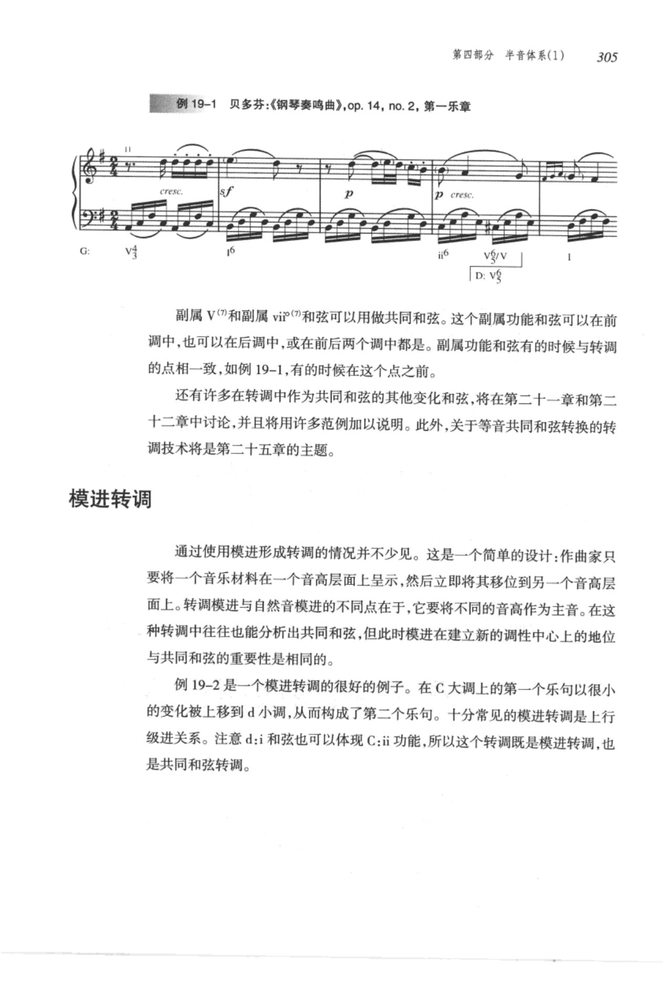
- 论点模进与五度循环 · sequence.transposition
手册提炼：模进把同一和声单元整体移位，可保持局部连接语法，同时累积离开原调的压力。
305
例19-1贝多芬：《钢琴奏鸣曲》，op.14，no.2，第一乐章
cresc
cresc
G:
6
ii6
D: vg
副属V（和副属vir（和弦可以用做共同和弦。这个副属功能和弦可以在前
调中，也可以在后调中，或在前后两个调中都是。副属功能和弦有的时候与转调
的点相一致，如例19-1，有的时候在这个点之前。
还有许多在转调中作为共同和弦的其他变化和弦，将在第二十一章和第二
十二章中讨论，并且将用许多范例加以说明。此外，关于等音共同和弦转换的转
调技术将是第二十五章的主题。
模进转调
通过使用模进形成转调的情况并不少见。这是一个简单的设计：作曲家只
要将一个音乐材料在一个音高层面上呈示，然后立即将其移位到另一个音高层
面上。转调模进与自然音模进的不同点在于，它要将不同的音高作为主音。在这
种转调中往往也能分析出共同和弦，但此时模进在建立新的调性中心上的地位
与共同和弦的重要性是相同的。
例19-2是一个模进转调的很好的例子。在C大调上的第一个乐句以很小
的变化被上移到d小调，从而构成了第二个乐句。十分常见的模进转调是上行
级进关系。注意d：i和弦也可以体现C：i功能，所以这个转调既是模进转调，也
是共同和弦转调。
PDF p.338
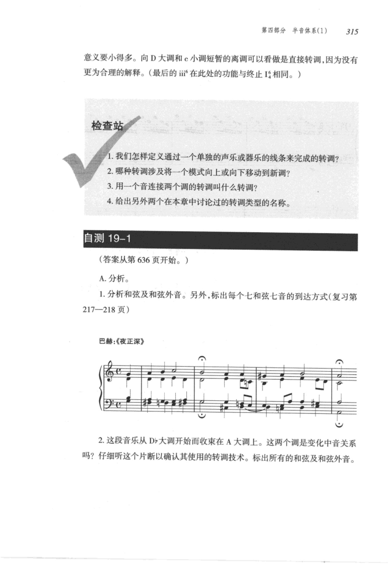
- 论点临时主音化（离调） · tonicization.time-structure
手册提炼：离调与转调的界限主要取决于持续时间、结构位置与终止确认；单靠一个变化和弦不能判定转调。
315
意义要小得多。向D大调和c小调短暂的离调可以看做是直接转调，因为没有
更为合理的解释。（最后的i在此处的功能与终止I相同。）
检查站
1.我们怎样定义通过一个单独的声乐或器乐的线条来完成的转调？
2.哪种转调涉及将一个模式向上或向下移动到新调？
3.用一个音连接两个调的转调叫什么转调？
4.给出另外两个在本章中讨论过的转调类型的名称。
自测19-1
（答案从第636页开始。）
A.分析。
1.分析和弦及和弦外音。另外，标出每个七和弦七音的到达方式（复习第
217—218页）
巴赫：《夜正深》
2.这段音乐从D大调开始而收束在A大调上。这两个调是变化中音关系
吗？仔细听这个片断以确认其使用的转调技术。标出所有的和弦及和弦外音。
PDF p.353
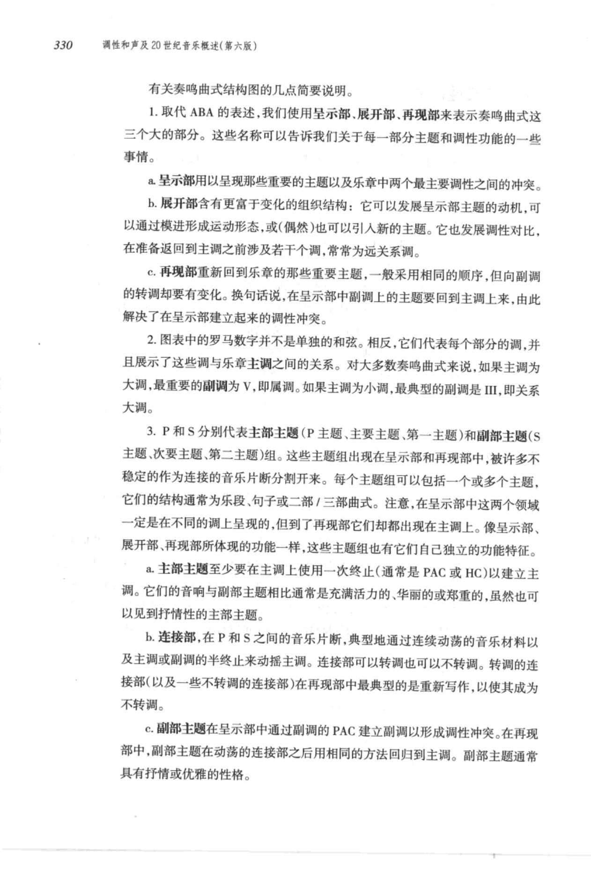
- 论点曲式中的和声策略 · form.sonata-conflict
手册提炼：奏鸣曲呈示部建立主调与副调的主题/调性冲突，展开部扩大不稳定，再现部把副调主题带回主调解决冲突。 - 论点曲式中的和声策略 · form.development-tonal-plan
手册提炼：奏鸣曲式展开部的调性布局同时影响主题发展与结构分段；调性变化参与大型结构的成立。 - 正文引用手册正文引用
典型乐段由两个乐句构成“前提—结论”关系：第一句常停在 HC 或 IAC，第二句以 PAC 收束（《概述》PDF p.184）。如果两句终止强度相同，结构上更像重复乐句而非真正的乐段。奏鸣曲式进一步把这种开合扩大为呈示部、展开部、再现部的调性冲突与解决（PDF p.353）。
调性和声及20世纪音乐概述（第六版）
有关奏鸣曲式结构图的几点简要说明。
1.取代ABA的表述，我们使用呈示部、展开部、再现部来表示奏鸣曲式这
三个大的部分。这些名称可以告诉我们关于每一部分主题和调性功能的一些
事情。
a.呈示部用以呈现那些重要的主题以及乐章中两个最主要调性之间的冲突。
b.展开部含有更富于变化的组织结构：它可以发展呈示部主题的动机，可
以通过模进形成运动形态，或（偶然）也可以引人新的主题。它也发展调性对比，
在准备返回到主调之前涉及若干个调，常常为远关系调。
c.再现部重新回到乐章的那些重要主题，一般采用相同的顺序，但向副调
的转调却要有变化。换句话说，在呈示部中副调上的主题要回到主调上来，由此
解决了在呈示部建立起来的调性冲突。
2.图表中的罗马数字并不是单独的和弦。相反，它们代表每个部分的调，并
且展示了这些调与乐章主调之间的关系。对大多数奏鸣曲式来说，如果主调为
大调，最重要的副调为V，即属调。如果主调为小调，最典型的副调是ⅡI，即关系
大调。
3.P和S分别代表主部主题（P主题、主要主题、第一主题）和副部主题（S
主题、次要主题、第二主题）组。这些主题组出现在呈示部和再现部中，被许多不
稳定的作为连接的音乐片断分割开来。每个主题组可以包括一个或多个主题，
它们的结构通常为乐段、句子或二部/三部曲式。注意，在呈示部中这两个领域
一定是在不同的调上呈现的，但到了再现部它们却都出现在主调上。像呈示部、
展开部、再现部所体现的功能一样，这些主题组也有它们自已独立的功能特征。
a.主部主题至少要在主调上使用一次终止（通常是PAC或HC）以建立主
调。它们的音响与副部主题相比通常是充满活力的、华丽的或郑重的，虽然也可
以见到抒情性的主部主题。
b.连接部，在P和S之间的音乐片断，典型地通过连续动荡的音乐材料以
及主调或副调的半终止来动摇主调。连接部可以转调也可以不转调。转调的连
接部（以及一些不转调的连接部）在再现部中最典型的是重新写作，以使其成为
不转调。
c.副部主题在呈示部中通过副调的PAC建立副调以形成调性冲突。在再现
部中，副部主题在动荡的连接部之后用相同的方法回归到主调。副部主题通常
具有抒情或优雅的性格。
PDF p.374
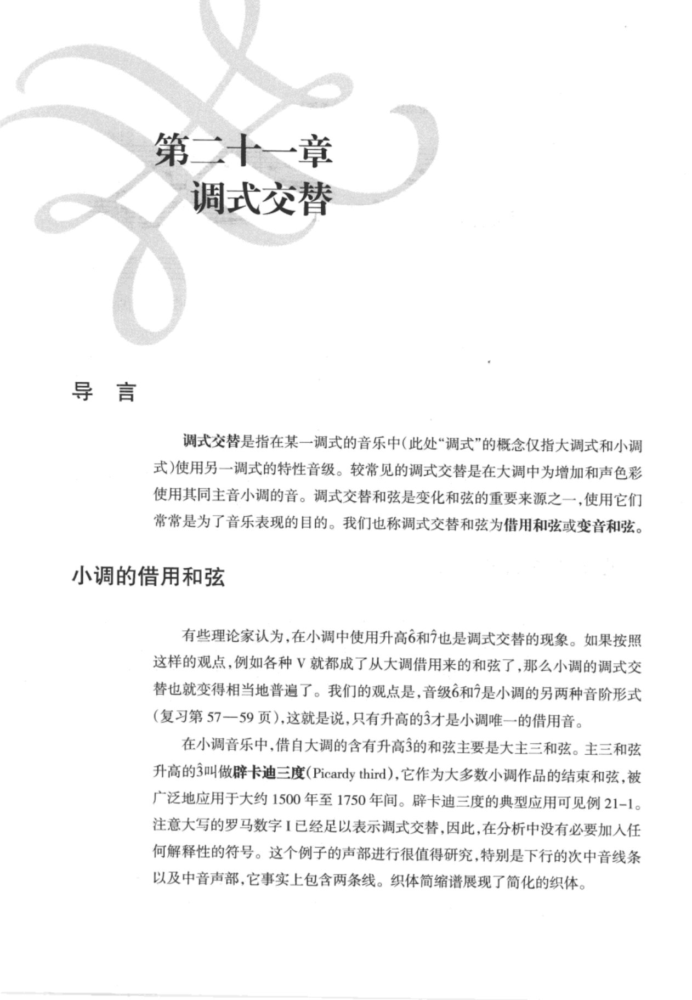
- 论点同主音调式交替（借用和弦） · modal-interchange.borrowed
手册提炼：同主音交替以主音不变为前提，把另一调式的特性音级与和弦借入当前调式，是变化和弦的重要来源。 - 正文引用手册正文引用
大调借用同主音小调资源，最常见的是含 ♭6 的 iv、♭VI、iiø7、vii°7；♭3 与 ♭7 进一步扩展为 ♭III、♭VII（《概述》PDF p.374–377）。小调借用大调常表现为升高三音、六音、七音，形成“交替小—大调”（桑桐 PDF p.234）。 - 代表页教材代表页 · 调性和声概述
手册将本页列为《调性和声概述》代表页；该书定位：从四部和声基础到 20 世纪后调性技法的完整课程，是本项目最系统的结构参照。
调式交替
导言
调式交替是指在某一调式的音乐中（此处“调式”的概念仅指大调式和小调
式）使用另一调式的特性音级。较常见的调式交替是在大调中为增加和声色彩
使用其同主音小调的音。调式交替和弦是变化和弦的重要来源之一，使用它们
常常是为了音乐表现的目的。我们也称调式交替和弦为借用和弦或变音和弦。
小调的借用和弦
有些理论家认为，在小调中使用升高6和7也是调式交替的现象。如果按照
这样的观点，例如各种V就都成了从大调借用来的和弦了，那么小调的调式交
替也就变得相当地普遍了。我们的观点是，音级6和7是小调的另两种音阶形式
（复习第57一59页），这就是说，只有升高的3才是小调唯一的借用音。
在小调音乐中，借自大调的含有升高3的和弦主要是大主三和弦。主三和弦
升高的3叫做辟卡迪三度（Picardythird），它作为大多数小调作品的结束和弦，被
广泛地应用于大约1500年至1750年间。辟卡迪三度的典型应用可见例21-1。
注意大写的罗马数字1已经足以表示调式交替，因此，在分析中没有必要加人任
何解释性的符号。这个例子的声部进行很值得研究，特别是下行的次中音线条
以及中音声部，它事实上包含两条线。织体简缩谱展现了简化的织体。
PDF p.377
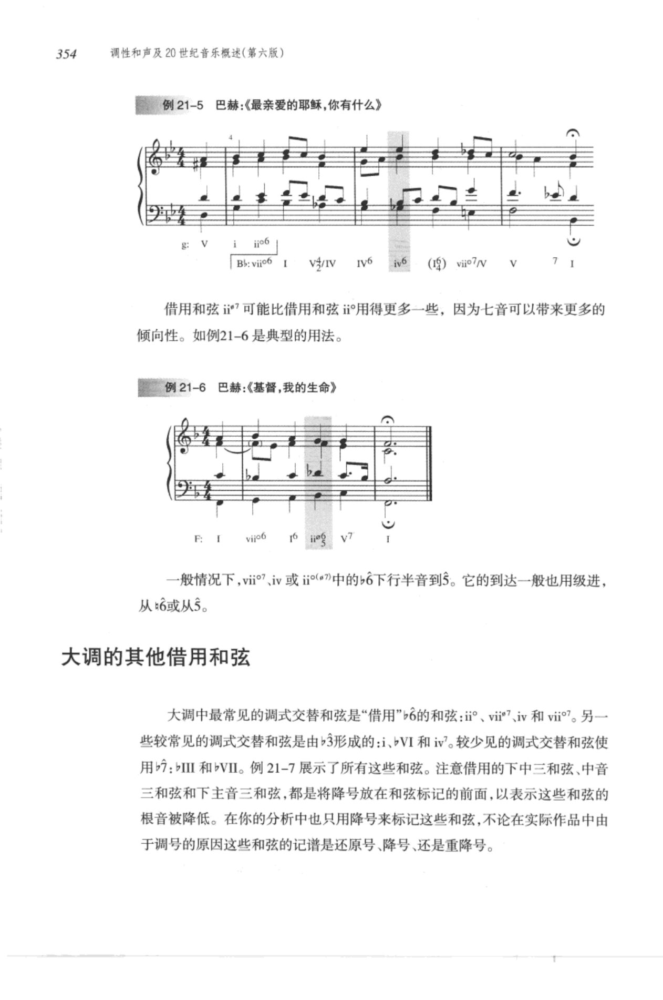
- 论点同主音调式交替（借用和弦） · modal-interchange.flat-degrees
手册提炼：大调借用中最常见的是含 ♭6 的 iv、♭VI、iiø7、vii°7；♭3 与 ♭7 进一步扩展色彩。
调性和声及20世纪音乐概述（第六版）
例21-5巴赫：《最亲爱的耶稣，你有什么》
ijo6
Bb:viio6
IV6
iv6
(4)vio7/
V4/IV
借用和弦i7可能比借用和弦i用得更多一些，因为七音可以带来更多的
倾向性。如例21-6是典型的用法。
例21-6巴赫：《基督，我的生命》
vijo6
16
一般情况下，viiv或ii()中的b6下行半音到5。它的到达一般也用级进，
从：6或从5。
大调的其他借用和弦
大调中最常见的调式交替和弦是“借用"b6的和弦：i°、viiv和vi。另一
些较常见的调式交替和弦是由b3形成的：i、bVI和iv。较少见的调式交替和弦使
用b7：bIⅢI和bVII。例21-7展示了所有这些和弦。注意借用的下中三和弦、中音
三和弦和下主音三和弦，都是将降号放在和弦标记的前面，以表示这些和弦的
根音被降低。在你的分析中也只用降号来标记这些和弦，不论在实际作品中由
于调号的原因这些和弦的记谱是还原号、降号、还是重降号。
PDF p.389
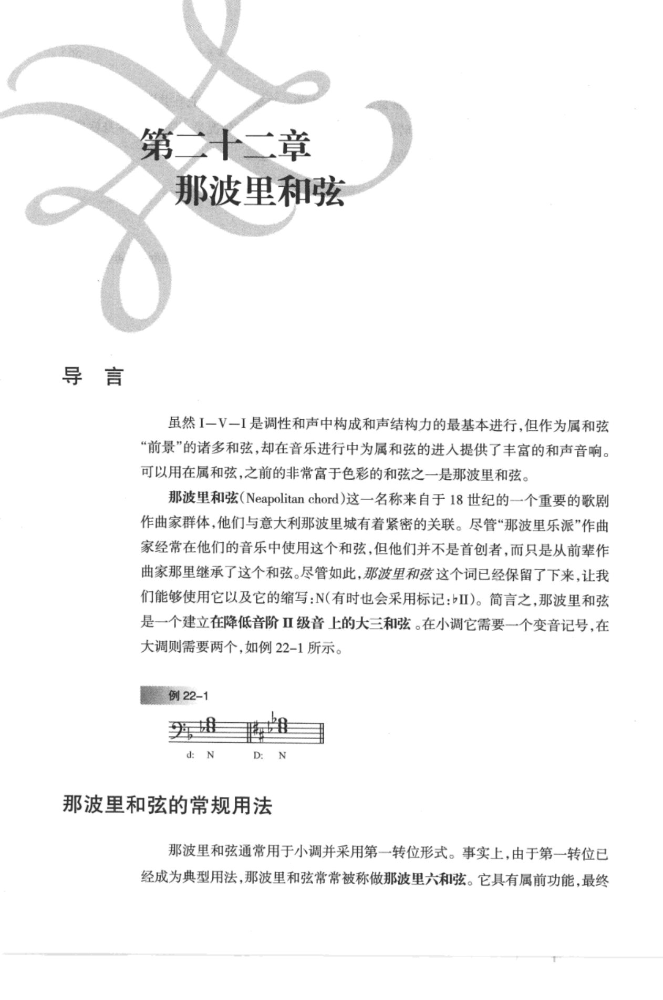
- 论点拿波里和弦（♭II） · neapolitan.definition
手册提炼：拿波里和弦是降低二级音上建立的大三和弦，常以第一转位出现并承担属前功能。 - 正文引用手册正文引用
拿波里是降低二级音上的大三和弦，通常第一转位，承担属前功能（《概述》PDF p.389–390）。操作要点： - 代表页教材代表页 · 调性和声概述
手册将本页列为《调性和声概述》代表页；该书定位：从四部和声基础到 20 世纪后调性技法的完整课程，是本项目最系统的结构参照。
那波里和弦
导言
虽然I-V-I是调性和声中构成和声结构力的最基本进行，但作为属和弦
“前景”的诸多和弦，却在音乐进行中为属和弦的进人提供了丰富的和声音响。
可以用在属和弦，之前的非常富于色彩的和弦之一是那波里和弦。
那波里和弦（Neapolitanchord）这一名称来自于18世纪的一个重要的歌剧
作曲家群体，他们与意大利那波里城有着紧密的关联。尽管“那波里乐派”作曲
家经常在他们的音乐中使用这个和弦，但他们并不是首创者，而只是从前辈作
曲家那里继承了这个和弦。尽管如此，那波里和弦这个词已经保留了下来，让我
们能够使用它以及它的缩写：N(有时也会采用标记：bⅡI)。简言之，那波里和弦
是一个建立在降低音阶Ⅱ级音上的大三和弦。在小调它需要一个变音记号，在
大调则需要两个，如例22-1所示。
例22-1
N:P
D:
那波里和弦的常规用法
那波里和弦通常用于小调并采用第一转位形式。事实上，由于第一转位已
经成为典型用法，那波里和弦常常被称做那波里六和弦。它具有属前功能，最终
PDF p.390
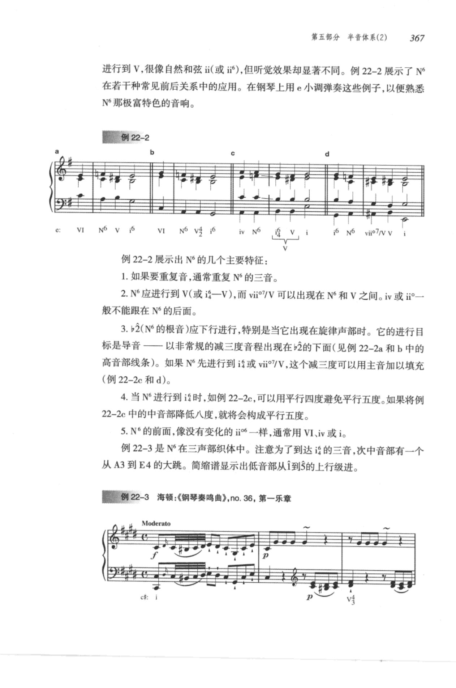
- 论点拿波里和弦（♭II） · neapolitan.resolution
手册提炼：拿波里的 ♭2 通常下行到导音，再进入属；应避免在它后面接 iv 或 ii。
367
进行到V，很像自然和弦i(或i)，但听觉效果却显著不同。例22-2展示了N
在若干种常见前后关系中的应用。在钢琴上用e小调弹奏这些例子，以便熟悉
N°那极富特色的音响。
例22-2
b
VI
N6Vi6
VI
N6V4
j6N6viio7/vv
例22-2展示出N的几个主要特征：
1.如果要重复音，通常重复N的三音。
2.N°应进行到V(或i—V）,而vii7/V可以出现在N和V之间。iv或ii一
般不能跟在N的后面。
3.b2(N?的根音)应下行进行，特别是当它出现在旋律声部时。它的进行目
标是导音—以非常规的减三度音程出现在b2的下面（见例22-2a和b中的
高音部线条）。如果N先进行到i或vi°7/V，这个减三度可以用主音加以填充
（例22-2c和d）。
4.当N进行到i时，如例22-2c，可以用平行四度避免平行五度。如果将例
22-2c中的中音部降低八度，就将会构成平行五度。
5.N°的前面，像没有变化的i%一样，通常用VI、iv或i。
例22-3是N°在三声部织体中。注意为了到达i的三音，次中音部有一个
从A3到E4的大跳。简缩谱显示出低音部从1到5的上行级进。
例22-3海顿：《钢琴奏鸣曲》，no.36，第一乐章
Moderato
PDF p.402
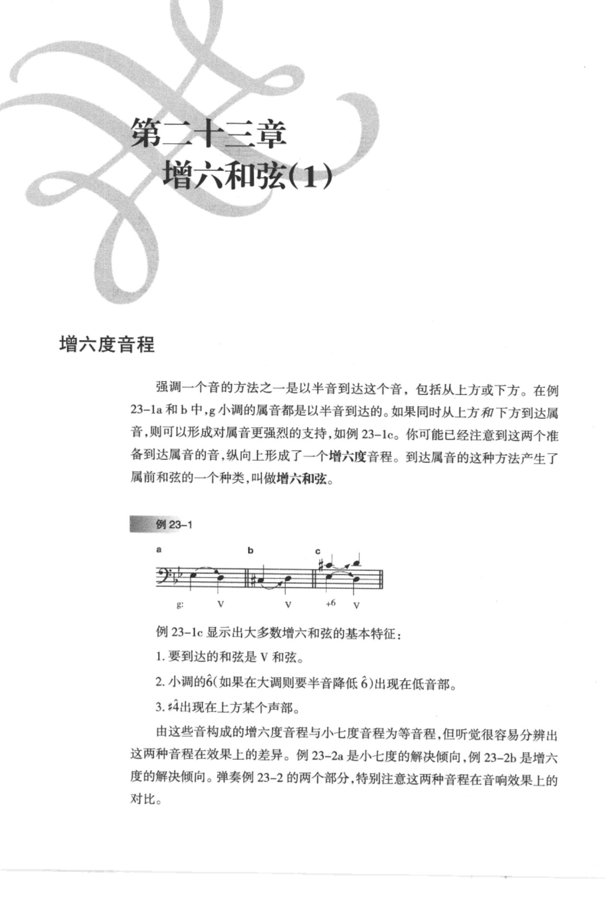
- 论点增六和弦 · augmented-sixth.definition
手册提炼：增六和弦以增六度音程半音向外解决到属音，是强属前和弦，包含意大利、法国、德国三类常见形态。 - 正文引用手册正文引用
这些规则分别见《调性和声及20世纪音乐概述》PDF p.229–230、p.402–403，以及柴可夫斯基 PDF p.46。 - 正文引用手册正文引用
增六和弦是属前和弦，基本音响是 ♭6 与 ♯4 构成增六度，向外半音解决到八度属音（《概述》PDF p.402–403）。三类常见形态： - 代表页教材代表页 · 调性和声概述
手册将本页列为《调性和声概述》代表页；该书定位：从四部和声基础到 20 世纪后调性技法的完整课程，是本项目最系统的结构参照。
增六和弦（1）
增六度音程
强调一个音的方法之一是以半音到达这个音，包括从上方或下方。在例
23-1a和b中，g小调的属音都是以半音到达的。如果同时从上方和下方到达属
音，则可以形成对属音更强烈的支持，如例23-1c。你可能已经注意到这两个准
备到达属音的音，纵向上形成了一个增六度音程。到达属音的这种方法产生了
属前和弦的一个种类，叫做增六和弦。
例23-1
例23-1c显示出大多数增六和弦的基本特征：
1.要到达的和弦是V和弦。
2.小调的6(如果在大调则要半音降低6)出现在低音部。
3.#4出现在上方某个声部。
由这些音构成的增六度音程与小七度音程为等音程，但听觉很容易分辨出
这两种音程在效果上的差异。例23-2a是小七度的解决倾向，例23-2b是增六
度的解决倾向。弹奏例23-2的两个部分，特别注意这两种音程在音响效果上的
对比。
PDF p.403
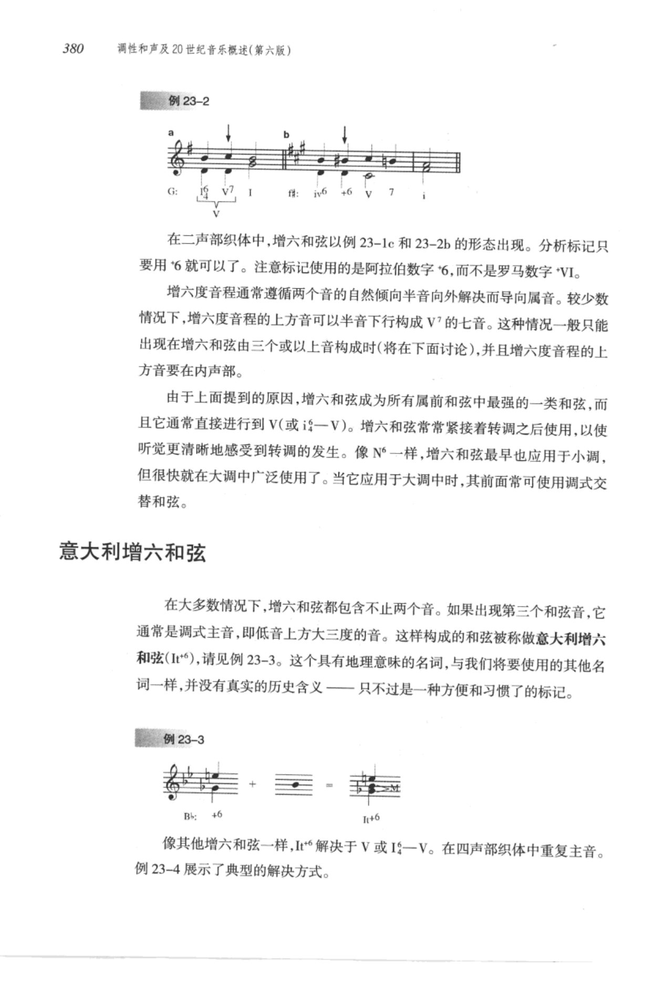
- 论点增六和弦 · augmented-sixth.resolution
手册提炼：增六度的两个外音半音向外扩张到八度属音；上方音偶尔可下行成为 V7 的七音。
调性和声及20世纪音乐概述（第六版）
例23-2
：iv6
在二声部织体中，增六和弦以例23-1c和23-2b的形态出现。分析标记只
要用6就可以了。注意标记使用的是阿拉伯数字+6，而不是罗马数字+VI。
增六度音程通常遵循两个音的自然倾向半音向外解决而导向属音。较少数
情况下，增六度音程的上方音可以半音下行构成V?的七音。这种情况一般只能
出现在增六和弦由三个或以上音构成时（将在下面讨论），并且增六度音程的上
方音要在内声部。
由于上面提到的原因，增六和弦成为所有属前和弦中最强的一类和弦，而
且它通常直接进行到V（或i一V）。增六和弦常常紧接着转调之后使用，以使
听觉更清晰地感受到转调的发生。像N一样，增六和弦最早也应用于小调，
但很快就在大调中广泛使用了。当它应用于大调中时，其前面常可使用调式交
替和弦。
意大利增六和弦
在大多数情况下，增六和弦都包含不止两个音。如果出现第三个和弦音，它
通常是调式主音，即低音上方大三度的音。这样构成的和弦被称做意大利增六
和弦（It+），请见例23-3。这个具有地理意味的名词，与我们将要使用的其他名
词一样，并没有真实的历史含义一一只不过是一种方便和习惯了的标记。
例23-3
Bb:+6
I+6
像其他增六和弦一样，It解决于V或I一V。在四声部织体中重复主音。
例23-4展示了典型的解决方式。
PDF p.431
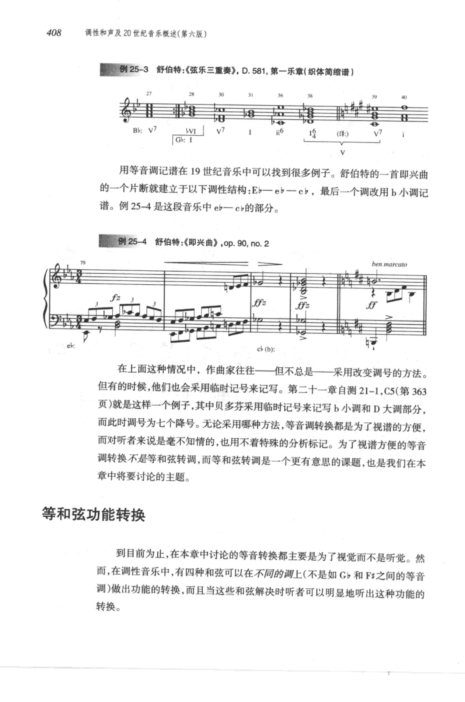
- 论点等音转调 · enharmonic.same-sound
手册提炼：同一音响可用不同方式记谱；当同一和弦被等音重释为新调中的属、导或增六功能时，记谱改变对应功能归属。
调性和声及20世纪音乐概述（第六版）
例25-3舒伯特：《弦乐三重奏》，D.581，第一乐章（织体简缩谱）
27
28
30
31
36
38
8
20
Bb:v7
bVI
v7
I
i6
14
(f量:)
V7
I:D
用等音调记谱在19世纪音乐中可以找到很多例子。舒伯特的一首即兴曲
的一个片断就建立于以下调性结构：Eb一eb一cb，最后一个调改用b小调记
谱。例25-4是这段音乐中eb一cb的部分。
例25-4舒伯特：《即兴曲》，op.90,no.2
benmarcato
ffz
ffz
丹
(q)
在上面这种情况中，作曲家往往——但不总是—采用改变调号的方法。
但有的时候，他们也会采用临时记号来记写。第二十一章自测21-1，C5（第363
页）就是这样一个例子，其中贝多芬采用临时记号来记写b小调和D大调部分，
而此时调号为七个降号。无论采用哪种方法，等音调转换都是为了视谱的方便，
而对听者来说是毫不知情的，也用不着特殊的分析标记。为了视谱方便的等音
调转换不是等和弦转调，而等和弦转调是一个更有意思的课题，也是我们在本
章中将要讨论的主题。
等和弦功能转换
到目前为止，在本章中讨论的等音转换都主要是为了视觉而不是听觉。然
而，在调性音乐中，有四种和弦可以在不同的调上（不是如G和F#之间的等音
调）做出功能的转换，而且当这些和弦解决时听者可以明显地听出这种功能的
转换。
PDF p.433
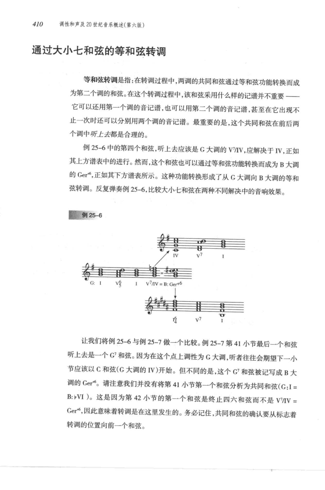
- 论点等音转调 · enharmonic-modulation.definition
手册提炼：等和弦转调把两调共同的大小七或减七和弦作等音功能重释，再按新调倾向解决。 - 正文引用手册正文引用
减七和弦可等音重写为四个不同根音的减七，分别解决到四个方向；同一减七音响因此可通向 24 个调（柴可夫斯基 PDF p.109；桑桐 PDF p.354）。大小七和弦可等音为德国增六或另一调属七，形成两个主要解决方向（《概述》PDF p.433–434）。等音转调的关键不只是“音响相同”，而是： - 代表页教材代表页 · 调性和声概述
手册将本页列为《调性和声概述》代表页；该书定位：从四部和声基础到 20 世纪后调性技法的完整课程，是本项目最系统的结构参照。
调性和声及20世纪音乐概述（第六版）
通过大小七和弦的等和弦转调
等和弦转调是指：在转调过程中，两调的共同和弦通过等和弦功能转换而成
为第二个调的和弦。在这个转调过程中，该和弦采用什么样的记谱并不重要一
它可以还用第一个调的音记谱，也可以用第二个调的音记谱，甚至在它出现不
止一次时还可以分别用两个调的音记谱。最重要的是，这个共同和弦在前后两
个调中听上去都是合理的。
例25-6中的第四个和弦，听上去应该是G大调的V7/IV，应解决于IV，正如
其上方谱表中的进行。然而，这个和弦也可以通过等和弦功能转换而成为B大调
的Ger*，正如其下方谱表所示。这种功能转换形成了从G大调向B大调的等和
弦转调。反复弹奏例25-6，比较大小七和弦在两种不同解决中的音响效果。
例25-6
喜
8
IV
v7
8
v1v7/V=B:Ger+6
8
14
v7
I
让我们将例25-6与例25-7做一个比较。例25-7第41小节最后一个和弦
听上去是一个G和弦。因为在这个点上调性为G大调，听者往往会期望下一小
节应该以C和弦（G大调的IV)开始。但不同的是，这个G和弦被记写成B大
调的Ger。请注意我们并没有将第41小节第一个和弦分析为共同和弦（G：I=
B:bVI）。这是因为第42小节的第一个和弦是终止四六和弦而不是V/IV=
Ger*，因此意味着转调是在这里发生的。务必记住，共同和弦的确认要从标志着
转调的位置向前一个和弦。
PDF p.434
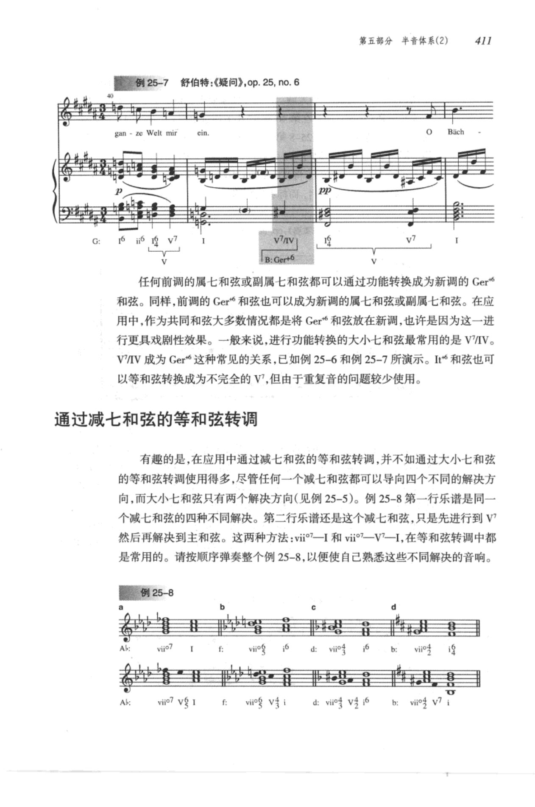
- 论点等音转调 · enharmonic-modulation.four-directions
手册提炼：减七和弦可向四个方向解决；大小七和弦因等音关系有两个解决方向，但实际路线受记谱与声部进行约束。
411
例25-7舒伯特：《疑问》，op.25，no.6
gan-ze Welt mir
ein.
0
Bach
vnv
g1
G:
B:Ger+6
任何前调的属七和弦或副属七和弦都可以通过功能转换成为新调的Ger
和弦。同样，前调的Ger和弦也可以成为新调的属七和弦或副属七和弦。在应
用中，作为共同和弦大多数情况都是将Ger*和弦放在新调，也许是因为这一进
行更具戏剧性效果。一般来说，进行功能转换的大小七和弦最常用的是V/IV。
V7/IV成为Ger*这种常见的关系，已如例25-6和例25-7所演示。It*和弦也可
以等和弦转换成为不完全的V，但由于重复音的问题较少使用。
通过减七和弦的等和弦转调
有趣的是，在应用中通过减七和弦的等和弦转调，并不如通过大小七和弦
的等和弦转调使用得多，尽管任何一个减七和弦都可以导向四个不同的解决方
向，而大小七和弦只有两个解决方向（见例25-5）。例25-8第一行乐谱是同一
个减七和弦的四种不同解决。第二行乐谱还是这个减七和弦，只是先进行到V7
然后再解决到主和弦。这两种方法：vi—I和vii—V—I,在等和弦转调中都
是常用的。请按顺序弹奏整个例25-8，以便使自己熟悉这些不同解决的音响。
例25-8
vijo7
f:
6
viio
iio
i9
Ab:
vijo7v1
f:
viio6
d:viiov4i6
viio4
PDF p.451
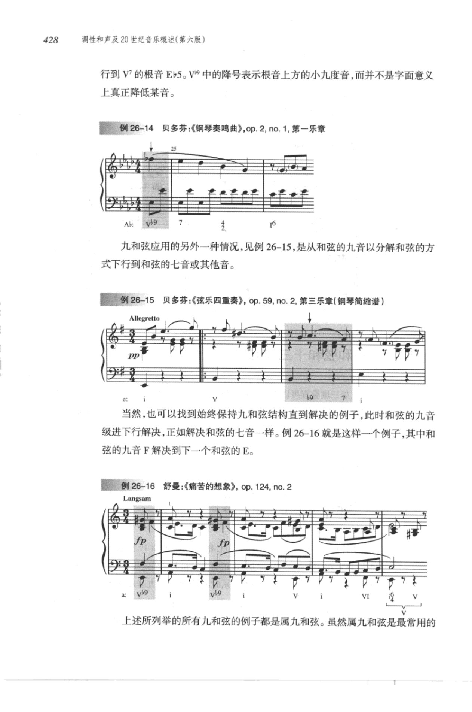
- 论点七和弦、九和弦与不协和等级 · seventh.ninth-composite
手册提炼：属九和弦在属功能上叠入下属功能因素，形成复合功能；九音通常不可省略并下行解决。
调性和声及20世纪音乐概述（第六版）
行到V7的根音Eb5。V中的降号表示根音上方的小九度音，而并不是字面意义
上真正降低某音。
例26-14贝多芬：《钢琴奏鸣曲》，op.2,no.1，第一乐章
ybg
Ab:
16
九和弦应用的另外一种情况，见例26-15，是从和弦的九音以分解和弦的方
式下行到和弦的七音或其他音。
例26-15贝多芬：《弦乐四重奏》，op.59，no.2，第三乐章（钢琴简缩谱）
Allegretto
当然，也可以找到始终保持九和弦结构直到解决的例子，此时和弦的九音
级进下行解决，正如解决和弦的七音一样。例26-16就是这样一个例子，其中和
弦的九音F解决到下一个和弦的E。
例26-16舒曼：《痛苦的想象》，op.124，no.2
Langsam
上述所列举的所有九和弦的例子都是属九和弦。虽然属九和弦是最常用的
PDF p.461
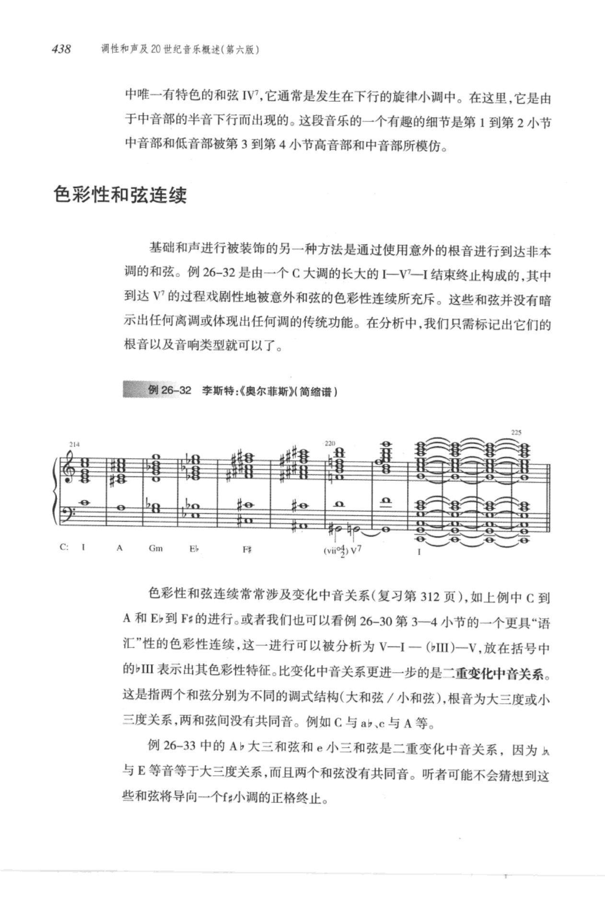
- 论点色彩和声与调式色彩 · color-harmony.chromatic-mediants
手册提炼：色彩性和弦连续常通过变化中音关系连接非本调和弦，以意外根音进行制造色彩而不必立即转调。
438
中唯一有特色的和弦IV，它通常是发生在下行的旋律小调中。在这里，它是由
于中音部的半音下行而出现的。这段音乐的一个有趣的细节是第1到第2小节
中音部和低音部被第3到第4小节高音部和中音部所模仿。
色彩性和弦连续
基础和声进行被装饰的另一种方法是通过使用意外的根音进行到达非本
调的和弦。例26-32是由一个C大调的长大的I—V—I结束终止构成的，其中
到达V的过程戏剧性地被意外和弦的色彩性连续所充斥。这些和弦并没有暗
示出任何离调或体现出任何调的传统功能。在分析中，我们只需标记出它们的
根音以及音响类型就可以了。
例26-32李斯特：《奥尔菲斯》简缩谱）
225
220)
喜
盘
8
8
#8
喜
8
8
8
Q
Gm
Eb
(vio4)v7
A
F#
色彩性和弦连续常常涉及变化中音关系（复习第312页），如上例中C到
A和E到F的进行。或者我们也可以看例26-30第3一4小节的一个更具“语
汇”性的色彩性连续，这一进行可以被分析为V—I一（IⅢI)一V，放在括号中
的Ⅲ表示出其色彩性特征。比变化中音关系更进一步的是二重变化中音关系。
这是指两个和弦分别为不同的调式结构（大和弦／小和弦），根音为大三度或小
三度关系，两和弦间没有共同音。例如C与ab、c与A等。
例26-33中的Ab大三和弦和e小三和弦是二重变化中音关系，因为h
与E等音等于大三度关系，而且两个和弦没有共同音。听者可能不会猜想到这
些和弦将导向一个f#小调的正格终止。
PDF p.469
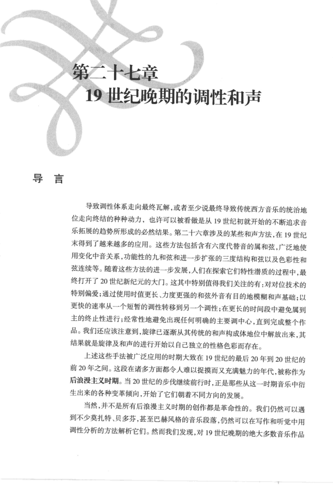
- 论点色彩和声与调式色彩 · color-harmony.late-tonal
手册提炼：晚期调性和声通过六度替代属和弦、变化中音、功能九和弦、三度扩张与色彩性连续不断削弱传统功能边界。
19世纪晚期的调性和声
导华言
导致调性体系走向最终瓦解，或者至少说最终导致传统西方音乐的统治地
位走向终结的种种动力，也许可以被看做是从19世纪初就开始的不断追求音
乐拓展的趋势所形成的必然结果。第二十六章涉及的某些和声方法，在19世纪
末得到了越来越多的应用。这些方法包括含有六度代替音的属和弦，广泛地使
用变化中音关系，功能性的九和弦和进一步扩张的三度结构和弦以及色彩性和
弦连续等。随着这些方法的进一步发展，人们在探索它们特性潜质的过程中，最
终打开了20世纪新纪元的大门。这其中特别值得我们关注的有：对对位技术的
特别偏爱；通过使用时值更长、力度更强的和弦外音有目的地模糊和声基础；以
更快的速率从一个短暂的调性转移到另一个调性；在更长的时间段中避免属到
主的终止性进行；经常性地避免出现任何明确的主要调中心，直到完成整个作
品。我们还应该注意到，旋律已逐渐从其传统的和声构成体地位中解放出来，其
结果就是旋律及和声的进行开始以自已独立的性格色彩而存在。
上述这些手法被广泛应用的时期大致在19世纪的最后20年到20世纪的
前20年之间。这段在诸多方面都令人难以捉摸而又充满魅力的年代，被称作为
后浪漫主义时期。当20世纪的步伐继续前行时，正是那些从这一时期音乐中衍
生出来的各种变革倾向，开始了它们朝着不同方向的发展。
当然，并不是所有后浪漫主义时期的创作都是革命性的。我们仍然可以遇
到不少莫扎特、贝多芬，甚至巴赫风格的音乐段落，仍然可以在写作和听觉中用
调性分析的方法解析它们。然而我们发现，对19世纪晚期的绝大多数音乐作品
PDF p.496
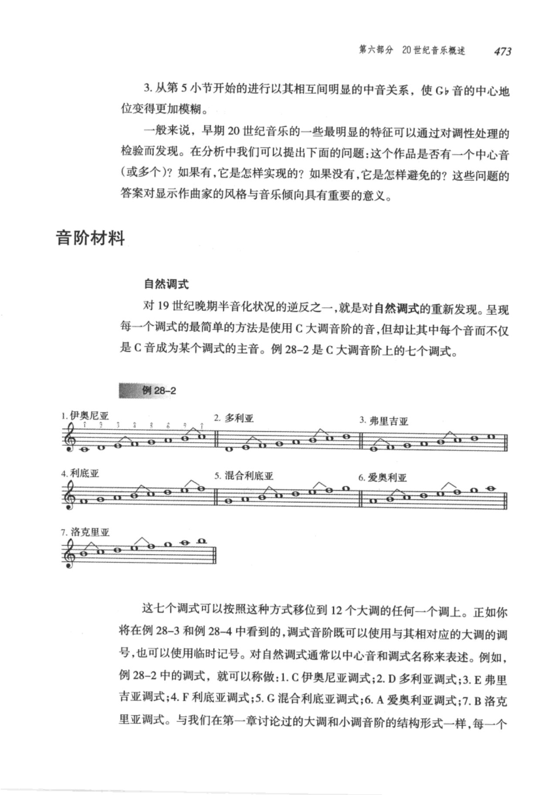
- 论点调式、音阶与音级 · scale.natural-modes
手册提炼：自然七调式可由同一音列移位并更换中心音得到；中心音与调式名称共同决定音阶身份。 - 正文引用手册正文引用
调式身份由 中心音 + 音程结构 共同确定。把 C 大调音阶的每个音轮流当中心，就得到七种自然调式；移调到 12 个主音可获得全部调式音阶（《概述》PDF p.496）。调式色彩可按主音上方大音程、增音程数量排列为“明亮度”序列（PDF p.497），但实际听感还受旋律、配器、持续音与和声节奏影响。 - 正文引用手册正文引用
十九世纪晚期对半音化的反拨之一是重新发现自然调式。自然调式既可以借用大调调号，也可以用临时记号；每个调式的半音位置不同，因此“同一主音上的不同调式”会产生不同色彩（《概述》PDF p.496–499）。印象主义、民谣、摇滚与电影配乐都大量使用这种“同主音调式交换”。 - 代表页教材代表页 · 调性和声概述
手册将本页列为《调性和声概述》代表页；该书定位：从四部和声基础到 20 世纪后调性技法的完整课程，是本项目最系统的结构参照。
473
3.从第5小节开始的进行以其相互间明显的中音关系，使G音的中心地
位变得更加模糊。
一般来说，早期20世纪音乐的一些最明显的特征可以通过对调性处理的
检验而发现。在分析中我们可以提出下面的问题：这个作品是否有一个中心音
（或多个）？如果有，它是怎样实现的？如果没有，它是怎样避免的？这些问题的
答案对显示作曲家的风格与音乐倾向具有重要的意义。
音阶材料
自然调式
对19世纪晚期半音化状况的逆反之一，就是对自然调式的重新发现。呈现
每一个调式的最简单的方法是使用C大调音阶的音，但却让其中每个音而不仅
是C音成为某个调式的主音。例28-2是C大调音阶上的七个调式。
例28-2
1.伊奥尼亚
2.多利亚
3.弗里吉亚
4.利底亚
5.混合利底亚
6.爱奥利亚
7.洛克里亚
这七个调式可以按照这种方式移位到12个大调的任何一个调上。正如你
将在例28-3和例28-4中看到的，调式音阶既可以使用与其相对应的大调的调
号，也可以使用临时记号。对自然调式通常以中心音和调式名称来表述。例如，
例28-2中的调式，就可以称做：1.C伊奥尼亚调式；2.D多利亚调式；3.E弗里
吉亚调式；4.F利底亚调式；5.G混合利底亚调式；6.A爱奥利亚调式；7.B洛克
里亚调式。与我们在第一章讨论过的大调和小调音阶的结构形式一样，每一个
PDF p.497
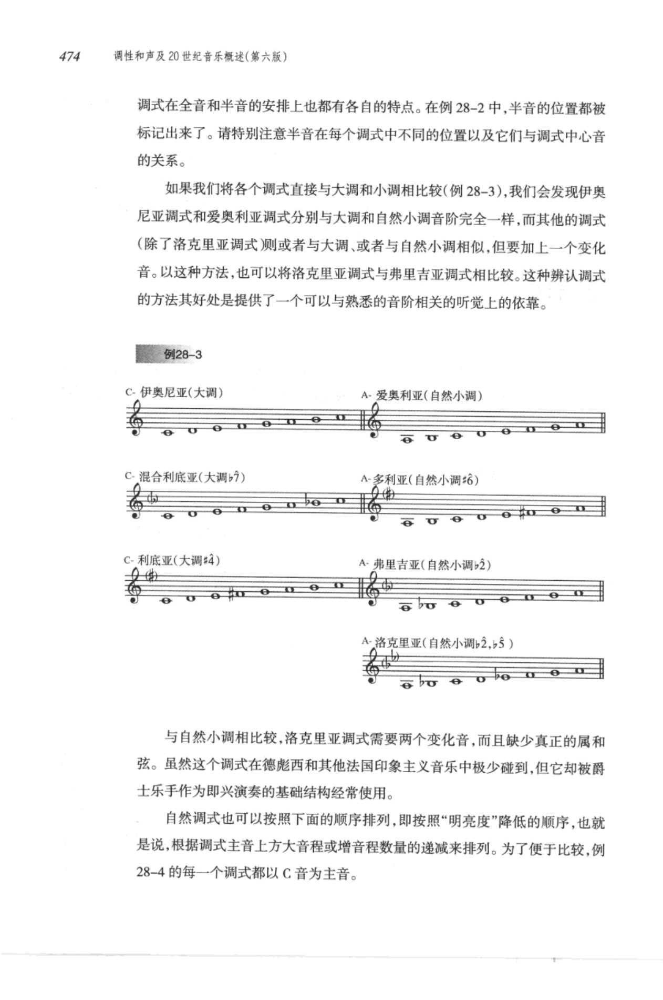
- 论点调式、音阶与音级 · scale.brightness-order
手册提炼：调式色彩可按主音上方大音程、增音程的数量排序，形成从利底亚到洛克里亚的明亮度序列。 - 正文引用手册正文引用
调式身份由 中心音 + 音程结构 共同确定。把 C 大调音阶的每个音轮流当中心，就得到七种自然调式；移调到 12 个主音可获得全部调式音阶（《概述》PDF p.496）。调式色彩可按主音上方大音程、增音程数量排列为“明亮度”序列（PDF p.497），但实际听感还受旋律、配器、持续音与和声节奏影响。
调式在全音和半音的安排上也都有各自的特点。在例28-2中，半音的位置都被
标记出来了。请特别注意半音在每个调式中不同的位置以及它们与调式中心音
的关系。
如果我们将各个调式直接与大调和小调相比较（例28-3），我们会发现伊奥
尼亚调式和爱奥利亚调式分别与大调和自然小调音阶完全一样，而其他的调式
（除了洛克里亚调式）则或者与大调、或者与自然小调相似，但要加上一个变化
音。以这种方法，也可以将洛克里亚调式与弗里吉亚调式相比较。这种辨认调式
的方法其好处是提供了一个可以与熟悉的音阶相关的听觉上的依靠。
例28-3
C-伊奥尼亚(大调）
A-爱奥利亚（自然小调）
C-混合利底亚（大调7）
A-多利亚（自然小调6）
C-利底亚(大调#4)
A-弗里吉亚（自然小调2）
(t)
洛克里亚（自然小调2，b5）
04
与自然小调相比较，洛克里亚调式需要两个变化音，而且缺少真正的属和
弦。虽然这个调式在德彪西和其他法国印象主义音乐中极少碰到，但它却被爵
士乐手作为即兴演奏的基础结构经常使用。
自然调式也可以按照下面的顺序排列，即按照“明亮度”降低的顺序，也就
是说，根据调式主音上方大音程或增音程数量的递减来排列。为了便于比较，例
28-4的每一个调式都以C音为主音。
PDF p.500
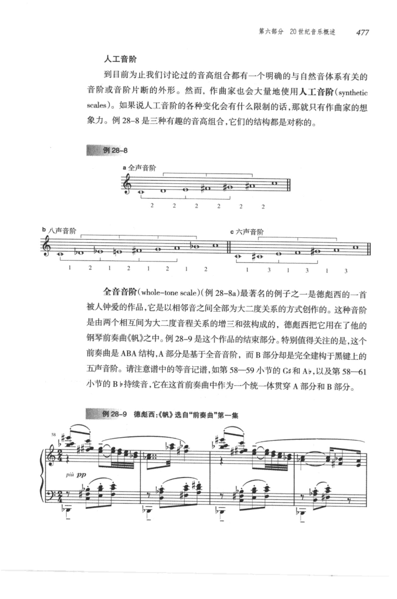
- 论点调式、音阶与音级 · scale.twentieth-century-materials
手册提炼：二十世纪音阶材料扩展到多种人工音阶、五声/六声、全音与半音音阶；七种自然调式仍可使用，但中心与用法不再受共同实践语法约束。
477
人工音阶
到目前为止我们讨论过的音高组合都有一个明确的与自然音体系有关的
音阶或音阶片断的外形。然而，作曲家也会大量地使用人工音阶（synthetic
scales）。如果说人工音阶的各种变化会有什么限制的话，那就只有作曲家的想
象力。例28-8是三种有趣的音高组合，它们的结构都是对称的。
例28-8
a全声音阶
2
b八声音阶
c六声音阶
全音音阶（whole-tone scale）（例28-8a)最著名的例子之一是德彪西的一首
被人钟爱的作品，它是以相邻音之间全部为大二度关系的方式创作的。这种音阶
是由两个相互间为大二度音程关系的增三和弦构成的，德彪西把它用在了他的
钢琴前奏曲《帆》之中。例28-9是这个作品的结束部分。特别值得关注的是，这个
前奏曲是ABA结构，A部分是基于全音音阶，而B部分却是完全建构于黑键上的
五声音阶。请注意谱中的等音记谱，如第58一59小节的G#和Ab，以及第58一61
小节的B持续音，它在这首前奏曲中作为一个统一体贯穿A部分和B部分。
例28-9德彪西：《帆》选自“前奏曲”第一集
pil
PDF p.501
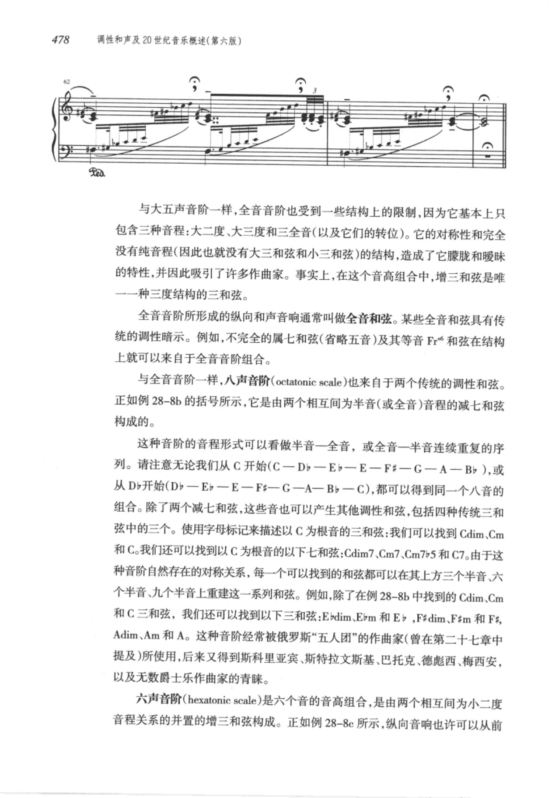
- 论点对称音阶与有限移位 · symmetry.whole-tone
手册提炼：全音阶把八度等分为六个全音，只有两种不同组成音的移位，缺乏导音与纯五度，因而削弱功能调性。
调性和声及20世纪音乐概述（第六版）
与大五声音阶一样，全音音阶也受到一些结构上的限制，因为它基本上只
包含三种音程：大二度、大三度和三全音（以及它们的转位）。它的对称性和完全
没有纯音程（因此也就没有大三和弦和小三和弦）的结构，造成了它朦胧和暖味
的特性，并因此吸引了许多作曲家。事实上，在这个音高组合中，增三和弦是唯
一一种三度结构的三和弦。
全音音阶所形成的纵向和声音响通常叫做全音和弦。某些全音和弦具有传
统的调性暗示。例如，不完全的属七和弦（省略五音）及其等音Fr*和弦在结构
上就可以来自于全音音阶组合。
与全音音阶一样，八声音阶（octatonicscale）也来自于两个传统的调性和弦。
正如例28-8b的括号所示，它是由两个相互间为半音（或全音）音程的减七和弦
构成的。
这种音阶的音程形式可以看做半音一全音，或全音一半音连续重复的序
组合。除了两个减七和弦，这些音也可以产生其他调性和弦，包括四种传统三和
弦中的三个。使用字母标记来描述以C为根音的三和弦：我们可以找到Cdim、Cm
和C。我们还可以找到以C为根音的以下七和弦：Cdim7、Cm7、Cm75和C7。由于这
种音阶自然存在的对称关系，每一个可以找到的和弦都可以在其上方三个半音、六
个半音、九个半音上重建这一系列和弦。例如，除了在例28-8b中找到的Cdim、Cm
和C三和弦，我们还可以找到以下三和弦：Ebdim、Em和E，F#dim、F#m和F#，
Adim、Am和A。这种音阶经常被俄罗斯“五人团”的作曲家（曾在第二十七章中
提及）所使用，后来又得到斯科里亚宾、斯特拉文斯基、巴托克、德彪西、梅西安，
以及无数爵士乐作曲家的青。
六声音阶（hexatonicscale）是六个音的音高组合，是由两个相互间为小二度
音程关系的并置的增三和弦构成。正如例28-8c所示，纵向音响也许可以从前
PDF p.508
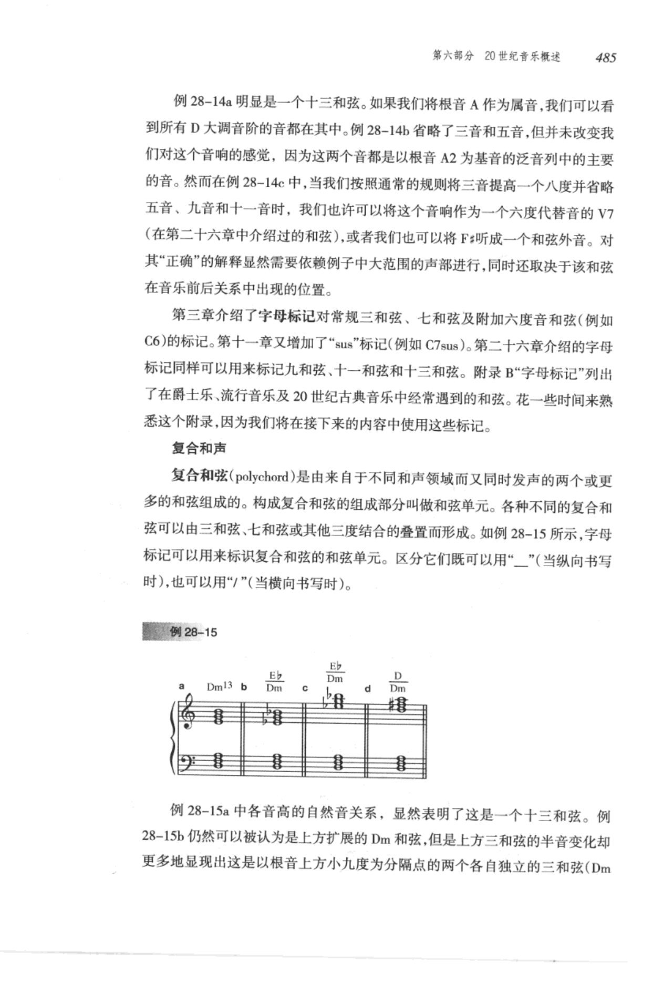
- 论点无调性与自由音高组织 · atonal.compound-chord-precursor
手册提炼：复合和弦把不同根音/结构的和弦同时叠合，可产生复合调性与高密度音响；贝多芬的复调化写法已显示其先声。 - 正文引用手册正文引用
复合和弦：两个或更多和弦单元同时发声，根音可呈半音、三全音或三度关系（《概述》PDF p.508–509）。 - 代表页教材代表页 · 调性和声概述
手册将本页列为《调性和声概述》代表页；该书定位：从四部和声基础到 20 世纪后调性技法的完整课程，是本项目最系统的结构参照。
485
例28-14a明显是一个十三和弦。如果我们将根音A作为属音，我们可以看
到所有D大调音阶的音都在其中。例28-14b省略了三音和五音，但并未改变我
们对这个音响的感觉，因为这两个音都是以根音A2为基音的泛音列中的主要
的音。然而在例28-14c中，当我们按照通常的规则将三音提高一个八度并省略
五音、九音和十一音时，我们也许可以将这个音响作为一个六度代替音的V7
（在第二十六章中介绍过的和弦），或者我们也可以将F听成一个和弦外音。对
其“正确”的解释显然需要依赖例子中大范围的声部进行，同时还取决于该和弦
在音乐前后关系中出现的位置。
第三章介绍了字母标记对常规三和弦、七和弦及附加六度音和弦（例如
C6）的标记。第十一章又增加了“sus"标记（例如C7sus）。第二十六章介绍的字母
标记同样可以用来标记九和弦、十一和弦和十三和弦。附录B“字母标记”列出
了在爵士乐、流行音乐及20世纪古典音乐中经常遇到的和弦。花一些时间来熟
悉这个附录，因为我们将在接下来的内容中使用这些标记。
复合和声
复合和弦（polychord)是由来自于不同和声领域而又同时发声的两个或更
多的和弦组成的。构成复合和弦的组成部分叫做和弦单元。各种不同的复合和
弦可以由三和弦、七和弦或其他三度结合的叠置而形成。如例28-15所示，字母
标记可以用来标识复合和弦的和弦单元。区分它们既可以用“”（当纵向书写
时），也可以用“”（当横向书写时）。
例28-15
Eb
E
Dm
D
Dm13b
Dm
d
Dm
囍
例28-15a中各音高的自然音关系，显然表明了这是一个十三和弦。例
28-15b仍然可以被认为是上方扩展的Dm和弦，但是上方三和弦的半音变化却
更多地显现出这是以根音上方小九度为分隔点的两个各自独立的三和弦（Dm
PDF p.510
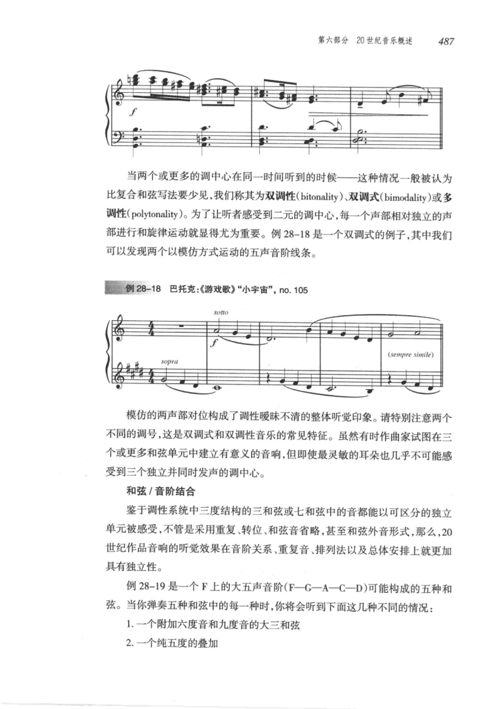
- 正文引用手册正文引用
双调性/多调性：两个或更多调中心同时存在；实际听感通常只能稳定把握两个中心（PDF p.510）。
487
书量共书：
当两个或更多的调中心在同一时间听到的时候一这种情况一般被认为
比复合和弦写法要少见，我们称其为双调性（bitonality）双调式（bimodality）或多
调性（polytonality）。为了让听者感受到二元的调中心，每一个声部相对独立的声
部进行和旋律运动就显得尤为重要。例28-18是一个双调式的例子，其中我们
可以发现两个以模仿方式运动的五声音阶线条。
例28-18巴托克：《游戏歌》“小宇宙”，no.105
sotto
(sempre simile)
pidos
模仿的两声部对位构成了调性暖味不清的整体听觉印象。请特别注意两个
不同的调号，这是双调式和双调性音乐的常见特征。虽然有时作曲家试图在三
个或更多和弦单元中建立有意义的音响，但即使最灵敏的耳朵也几乎不可能感
受到三个独立并同时发声的调中心。
和弦/音阶结合
鉴于调性系统中三度结构的三和弦或七和弦中的音都能以可区分的独立
单元被感受，不管是采用重复、转位、和弦音省略，甚至和弦外音形式，那么，20
世纪作品音响的听觉效果在音阶关系、重复音、排列法以及总体安排上就更加
具有独立性。
例28-19是一个F上的大五声音阶(F—G一A—C—D)可能构成的五种和
弦。当你弹奏五种和弦中的每一种时，你将会听到下面这几种不同的情况：
1.一个附加六度音和九度音的大三和弦
2.一个纯五度的叠加
PDF p.512
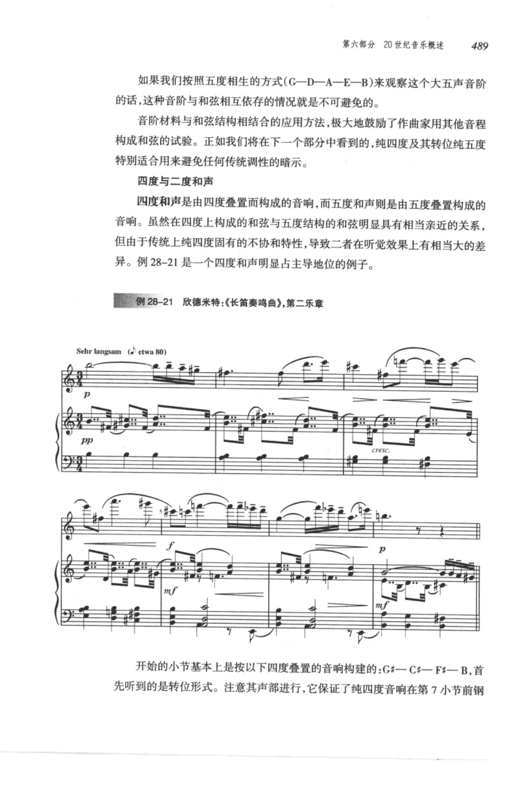
- 正文引用手册正文引用
四度/五度和声：以纯四度叠置削弱三度功能和声的根音支持（PDF p.512）。
489
如果我们按照五度相生的方式（G—D—A一E一B)来观察这个大五声音阶
的话，这种音阶与和弦相互依存的情况就是不可避免的。
音阶材料与和弦结构相结合的应用方法，极大地鼓励了作曲家用其他音程
构成和弦的试验。正如我们将在下一个部分中看到的，纯四度及其转位纯五度
特别适合用来避免任何传统调性的暗示。
四度与二度和声
四度和声是由四度叠置而构成的音响，而五度和声则是由五度叠置构成的
音响。虽然在四度上构成的和弦与五度结构的和弦明显具有相当亲近的关系，
但由于传统上纯四度固有的不协和特性，导致二者在听觉效果上有相当大的差
异。例28-21是一个四度和声明显占主导地位的例子。
例28-21欣德米特：《长笛奏鸣曲》，第二乐章
Sehr langsam(etwa80)
cresc.
开始的小节基本上是按以下四度叠置的音响构建的：G#一C#一F#一B，首
先听到的是转位形式。注意其声部进行，它保证了纯四度音响在第7小节前钢
PDF p.513
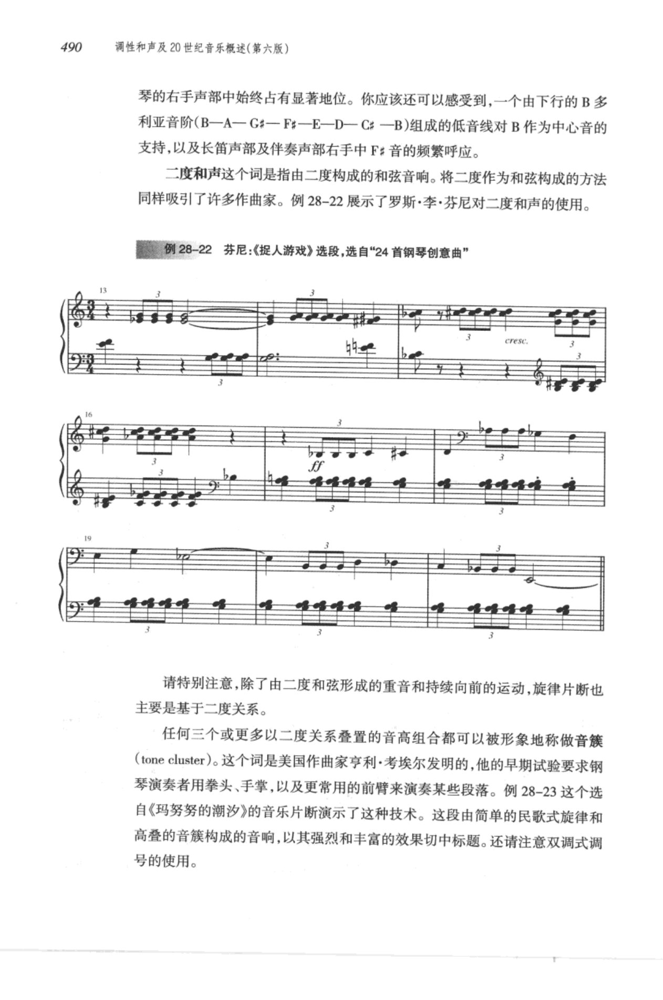
- 正文引用手册正文引用
二度/音簇：以密集邻音制造打击性、噪声性或织体性音响（PDF p.513–514）。
调性和声及20世纪音乐概述（第六版）
琴的右手声部中始终占有显著地位。你应该还可以感受到，一个由下行的B多
利亚音阶(B—A—G#—F#—E—D—C#—B)组成的低音线对B作为中心音的
支持，以及长笛声部及伴奏声部右手中F#音的频繁呼应。
二度和声这个词是指由二度构成的和弦音响。将二度作为和弦构成的方法
同样吸引了许多作曲家。例28-22展示了罗斯·李·芬尼对二度和声的使用。
例28-22芬尼：《捉人游戏》选段，选自“24首钢琴创意曲”
cresc.
请特别注意，除了由二度和弦形成的重音和持续向前的运动，旋律片断也
主要是基于二度关系。
任何三个或更多以二度关系叠置的音高组合都可以被形象地称做音簇
（tonecluster）。这个词是美国作曲家亨利·考埃尔发明的，他的早期试验要求钢
琴演奏者用拳头、手掌，以及更常用的前臂来演奏某些段落。例28-23这个选
自《玛努努的潮汐》的音乐片断演示了这种技术。这段由简单的民歌式旋律和
高叠的音簇构成的音响，以其强烈和丰富的效果切中标题。还请注意双调式调
号的使用。
PDF p.514
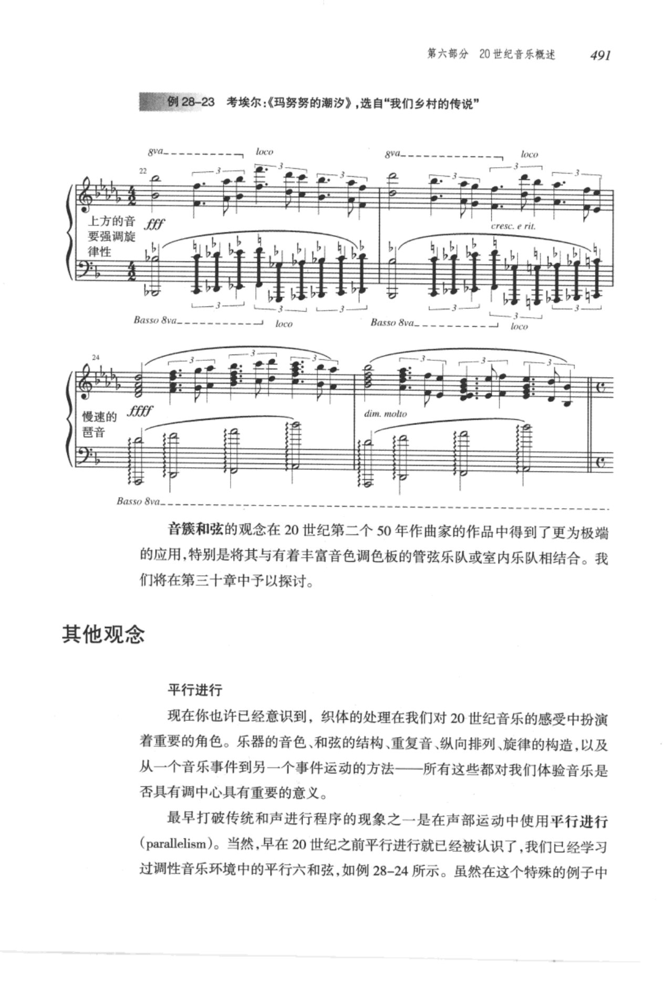
- 正文引用手册正文引用
平行进行：在二十世纪被重新接受，用于色彩、织体与去功能化（PDF p.514）。
491
例28-23考埃尔：《玛努努的潮汐》，选自“我们乡村的传说”
22
上方的音
fff
要强调旋
律性
Basso8va
Basso8va
loco
ffff
dim.molto
慢速的
琶音
Basso8va
音簇和弦的观念在20世纪第二个50年作曲家的作品中得到了更为极端
的应用，特别是将其与有着丰富音色调色板的管弦乐队或室内乐队相结合。我
们将在第三十章中予以探讨。
其他观念
平行进行
现在你也许已经意识到，织体的处理在我们对20世纪音乐的感受中扮演
着重要的角色。乐器的音色、和弦的结构、重复音、纵向排列、旋律的构造，以及
从一个音乐事件到另一个事件运动的方法一一所有这些都对我们体验音乐是
否具有调中心具有重要的意义。
最早打破传统和声进行程序的现象之一是在声部运动中使用平行进行
（parallelism）。当然，早在20世纪之前平行进行就已经被认识了，我们已经学习
过调性音乐环境中的平行六和弦，如例28-24所示。虽然在这个特殊的例子中
PDF p.536
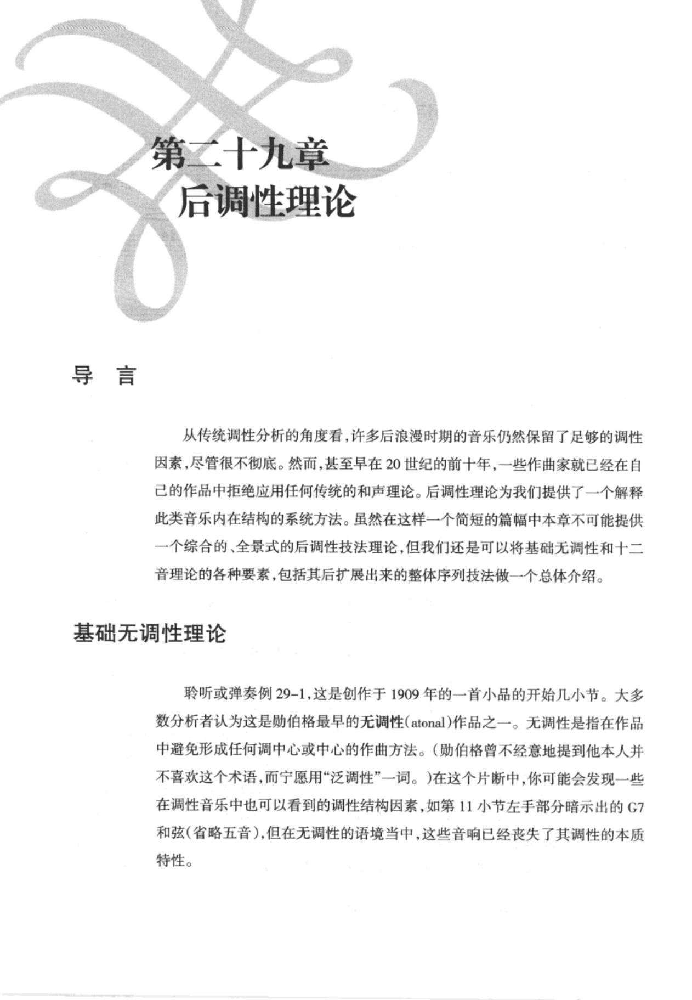
- 论点无调性与自由音高组织 · atonal.definition
手册提炼：无调性避免形成任何调中心；音高、音程、和弦与节奏关系仍需组织，只是功能进行不再承担调性结构。 - 正文引用手册正文引用
无调性避免形成可辨认的调中心。桑桐 PDF p.563 列出其主要特征：无主和弦、半音阶自由运用、纵向不协和、避免功能进行、织体多层次等。《概述》PDF p.536 把无调性定义为“避免形成任何调中心或中心的作曲方法”。分析时应关注： - 代表页教材代表页 · 调性和声概述
手册将本页列为《调性和声概述》代表页；该书定位：从四部和声基础到 20 世纪后调性技法的完整课程，是本项目最系统的结构参照。
后调性理论
导运言
从传统调性分析的角度看，许多后浪漫时期的音乐仍然保留了足够的调性
因素，尽管很不彻底。然而，甚至早在20世纪的前十年，一些作曲家就已经在自
已的作品中拒绝应用任何传统的和声理论。后调性理论为我们提供了一个解释
一个综合的、全景式的后调性技法理论，但我们还是可以将基础无调性和十二
音理论的各种要素，包括其后扩展出来的整体序列技法做一个总体介绍。
基础无调性理论
聆听或弹奏例29-1，这是创作于1909年的一首小品的开始几小节。大多
数分析者认为这是勋伯格最早的无调性（atonal）作品之一。无调性是指在作品
中避免形成任何调中心或中心的作曲方法。（勋伯格曾不经意地提到他本人并
不喜欢这个术语，而宁愿用“泛调性”一词。）在这个片断中，你可能会发现一些
在调性音乐中也可以看到的调性结构因素，如第11小节左手部分暗示出的G7
和弦（省略五音），但在无调性的语境当中，这些音响已经丧失了其调性的本质
特性。
PDF p.539
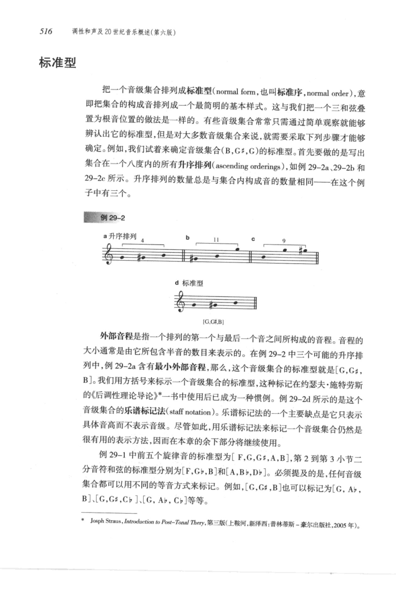
- 论点音级集合与集合类 · set-theory.normal-form
手册提炼：音级集合的标准型是集合在一个八度内最紧凑的升序排列，是计算基本形与集合类的起点。 - 正文引用手册正文引用
《概述》PDF p.539–542 对标准型与模 12 运算给出直接说明。程序的集合实验室会自动计算标准型、基本形、音程向量、补集、包含音阶与当前调性和弦；输入 C E G B♭ 时显示为 C · E · G · B♭，说明集合运算仍保留用户输入中的降号拼写。
调性和声及20世纪音乐概述（第六版）
标准型
把一个音级集合排列成标准型（normalform，也叫标准序，normalorder），意
即把集合的构成音排列成一个最简明的基本样式。这与我们把一个三和弦叠
置为根音位置的做法是一样的。有些音级集合常常只需通过简单观察就能够
辨认出它的标准型，但是对大多数音级集合来说，就需要采取下列步骤才能够
确定。例如，我们试着来确定音级集合（B，G#，G)的标准型。首先要做的是写出
集合在一个八度内的所有升序排列（ascendingorderings），如例29-2a、29-2b和
29-2c所示。升序排列的数量总是与集合内构成音的数量相同一一在这个例
子中有三个。
例29-2
a升序排列
d标准型
[G,G,B]
外部音程是指一个排列的第一个与最后一个音之间所构成的音程。音程的
大小通常是由它所包含半音的数目来表示的。在例29-2中三个可能的升序排
列中，例29-2a含有最小外部音程，那么，这个音级集合的标准型就是[G，G#，
B]。我们用方括号来标示一个音级集合的标准型，这种标记在约瑟夫·施特劳斯
的《后调性理论导论》*一书中使用后已成为一种惯例。例29-2d所示的是这个
音级集合的乐谱标记法（staffnotation）。乐谱标记法的一个主要缺点是它只表示
具体音高而不表示音级。尽管如此，用乐谱标记法来标记一个音级集合仍然是
很有用的表示方法，因而在本章的余下部分将继续使用。
例29-1中前五个旋律音的标准型为[F，G，G#，A，B]，第2到第3小节二
分音符和弦的标准型分别为[F，Gb，B]和[A，Bb,Db］。必须提及的是，任何音级
集合都可以用不同的等音方式来标记。例如，[G，G#，B]也可以标记为[G，Ab，
B]、[G，G#，C]、[G，A，C]等等。
*JosphStraus,IntroductiontoPost-TonalThery，第三版（上鞍河，新泽西：普林蒂斯-豪尔出版社,2005年）。
PDF p.542
- 论点音级集合与集合类 · set-theory.mod-12
手册提炼：后调性音高运算以 12 为模；移位、倒影、补集与音程向量都建立在这一等价关系上。
519
这个图与第一章介绍的五度圈相似，但这个圈是按12个相等的半音均分
（顺时针方向依次递增），而不是按五度均分的。每一个点代表一个音级，仅用
带升号的音名标记法标记。在图29-2中，同一图形是用整数标记法[C=0]标
记的。
图29-2
10
这个图很有用处，因为钟面与音级都是以12为模的体系（简称模12，mod
12）。其实你早已熟悉了模12计算方法。假设在上午10点钟你饿了，但午餐时
间是在下午1点钟，你会问：“到午餐还有几个小时？”回答自然是3个小时。在
一个模12体系中，计算结果是与模12等同关系（mod12equivalents）相对应，也
是与0-11之间的所有整数数字相对应的。当普通的加法或减法得出的结果超
出了这个范围，那么用这个得数重复地加或减12，直到产生一个0-11之间的
整数为止。请注意，加或减12分别相当于提高或降低一个八度。在此列出一些
模12计算方法的例子：11+2=1,6+6=0,10-12=10,4-10=6,3+2=5,7+0=7，
-1+2=1,等等。
移位(T)和倒影(T,I)
当我们学习移位（transposition,T）—一一种无调性理论基本操作方法的时
候，往往会觉得这种理论的数学属性越来越明显。对一个音级集合进行移位，就
是将移位数字n依次加到每一个集合的构成音上。例如，让我们对例29-1开始
的三音动机[G，G#，B]做T移位。首先，把它转换为整数标记，然后依次在每个
PDF p.550
- 论点十二音序列与序列和声 · serialism.row
手册提炼：十二音技法以预先设计的十二音级排序为全曲音高材料，并通过移位、逆行、倒影、逆行倒影组织 48 种形式。 - 正文引用手册正文引用
十二音技法把 12 个音级排成序列，通过原型 P、逆行 R、倒影 I、逆行倒影 RI 及其 12 个移位组织全曲，共 48 种形式（《概述》PDF p.550）。12×12 矩阵把 48 种形式集中呈现：横向为 P/R，纵向为 I/RI（PDF p.552）。 - 代表页教材代表页 · 调性和声概述
手册将本页列为《调性和声概述》代表页；该书定位：从四部和声基础到 20 世纪后调性技法的完整课程，是本项目最系统的结构参照。
第六部分20世纪音乐概述
4.使用大范围和极端的跳进旋律。
上述原则在勋伯格的大多数十二音音乐中继续保留下来，也体现在他的学
生阿尔班·贝尔格和安东·威伯恩的音乐当中。他的体系通过以下精心设计的方
法来平均地对待12个音级：
1.十二音作品是基于作曲家在作曲之前设计好的一个十二音级的排序，这
个排序叫做序列（series）或音列（row）。
2.在12个音级全部发声之前不能再次出现任一音级。此项限定有一个例外：
音级可以重复。重复也可以出现在普通的音型背景之中，如颤音、震音和持续音。
3.在这个程序的范围内，序列可以合理地使用移位、逆行（移位结构的逆
序）、倒影（每一音程的镜像）、或逆行倒影（倒影结构的逆序），这是十二音体系
基本原理中的四种基本的转换方法。
一个序列可以移位到12个不同的高度，形成12种不同的序列原型结构
（primeform）。同样还有12种逆行结构（retrogradeform）,12种倒影结构（inver-
sionform）和12种逆行倒影结构（retrograde-inversionform），构成总共48种系列
结构。我们用符号Px来指代从P到P的12种原型结构，其中下标x或称指数
（index）表示序列第一个音级半音移位的高度（八度内向上移位）。我们用符号
Rx（R到R）来表示逆行结构，用Ix（I到I）来表示倒影结构，用RLx（R到
不过是Ix结构的反方向呈示。同时还要注意，Ix结构是一种复合转换的产物，先
倒影然后再移位。
记住这一点非常重要，即序列并不需要被严格地作为“主题”或“旋律”，但
却是作曲家控制整个作品结构逻辑的组织工具。在探讨更为复杂的例子之前，
让我们先来考查一个名为《孤独》的简单的例子，作品选自罗斯·李·芬尼创作的
一套“24首钢琴创意曲”的十二音钢琴小品。它的序列用乐谱标记法如例29-9
所示：
例29-9芬尼：序列选自“24首钢琴创意曲”
0
序号：123
10
11
12
例29-10是《孤独》的全谱。注意所有12个音级在前4小节中按照A一B一
PDF p.552
- 论点十二音序列与序列和声 · serialism.matrix
手册提炼：12×12 矩阵把 48 种序列形式集中呈现，横向为原型/逆行，纵向为倒影/逆行倒影。 - 正文引用手册正文引用
十二音技法把 12 个音级排成序列，通过原型 P、逆行 R、倒影 I、逆行倒影 RI 及其 12 个移位组织全曲，共 48 种形式（《概述》PDF p.550）。12×12 矩阵把 48 种形式集中呈现：横向为 P/R，纵向为 I/RI（PDF p.552）。
529
现在让我们更仔细地观察序列的全部48种结构。例29-11是安东·威伯恩
《交响曲》op.21的序列。
例29-11威伯恩：《交响曲》，op.21序列
当我们分析一首十二音作品的时候，迅速地知道它的48种序列结构是很
有帮助的。表29-1所示的12×12矩阵可以让我们很方便地获得这个信息。Po
结构横向排在矩阵的最顶端，I结构纵向列在矩阵的第一列。L结构可以以A一
D#为倒影轴（inversionalaxis），通过倒影或镜像P。中的音程而计算出来。例如，
Po的第1和第2个音，即A一F#（向上九个半音）倒影为L的A一C（向下九个
半音）;P。的第2和第3个音，即F#一G（向上一个半音）倒影为L的CB（向下
一个半音）；Po的第3和第4个音，即G一Ab（向上一个半音）倒影为L的B一Bb
（向下一个半音），等等，如下所示：
序号：12345
6
10
1112
Po→AF#GAbE
CER
FB
BD
C#
I→ACBBDCG
倒影轴的概念也可以在音级钟面图上来探讨，如下图所示：
图29-4
注意，倒影轴是从A到D#。音程A一F可以用一条连接A一F的线段表
示。倒影音程A一C是通过以A一D#倒影轴为一条对称线，将A一F#线段做镜
像或翻转的方法获得的。
PDF p.562
- 正文引用手册正文引用
整体序列进一步把节奏、力度、音色、发音法等参数也序列化（PDF p.562）。程序提供十二音矩阵生成器，并检查输入必须恰好包含 12 个不同音级；它不替用户判断序列的音乐质量，只保证运算结构正确。
539
整体序列主义
毫无疑问，一旦作曲家执迷于音高排序的观念，就会不可避免地对其他音
乐参数的排序产生浓厚的兴趣。序列化（serialization），这一在20世纪早期就被
一些人认为是十二音技法同义词的术语，就是用来表示作曲家在最终确定除音
高外的其他音乐参数时，也都必须依赖预先设定好的序列的一种处理方法。这
种方法被称做全面序列化（totalserialization）或整体序列主义（integralserialism）。
有两位作曲家成为实践这一构想的发者。安东·威伯恩，他对排序和对称的迷
恋我们已经在前面看到了。另一位是奥利维埃·梅西安，他的节奏练习曲《时值
与力度的模式》使他在达姆施塔特暑期课程班上的学生们产生了深远的影响，
特别是皮埃尔·布列兹（PierreBoulez）和卡尔海因兹·施托克豪森（Karlheinz
Stockhausen）。例29-15是梅西安的《时值与力度的模式》，这是一首三行谱的钢
琴独奏作品。
例29-15梅西安：《时值与力度的模式》，选自“四首节奏练习曲”
Modere
Bva
ddd
行
m
pp
f
sffmf
mf
p
pp
sffmf
m
mf
丹
mf
pp
PDF p.566
- 论点十二音序列与序列和声 · serialism.pitch-order-first
手册提炼：早期十二音序列主要组织音高次序，节奏、音色与和声仍保留作曲家的自由；整体序列则把序列原则扩展到更多参数。
543
自测29-3
（答案从第664页开始。）
A.
1.全面序列化的创作方法与原创的十二音技法有什么区别？
2.写出两位用这种技法进行实验的作曲家名字。
小结
后调性理论为我们提供了揭示无调性音乐潜在结构的分析手段。集合理论
建立了一种描述无调性音乐音高结构的系统方式，为我们提供了一个为任何一
种十二音结合命名的统一方法。勋伯格的十二音技法与它的革命性变革一样意
义深远。在第二次世界大战之后，几乎每一位作曲家都感觉到整体序列原则在
其作曲技术中的必要性。甚至像科普兰和斯特拉文斯基这样起初抵制序列主义
影响的作曲家，最终还是屈从于它的诱惑。威伯恩对排序和对称的兴趣为全面
序列化铺平了道路，即对包括音高在内的各项音乐参数进行排序，例如节奏、力
度和发音法。
正如你将在下一章中看到的，有两种看上去完全对立的作曲方法却显示出
惊人的相似性一—一种是努力实现全面的控制，而另一种则是通过偶然的机
遇试图完全放弃控制。这两种方法可能得到的是相似的音乐效果，某种意义上
反映了作曲家追求从传统创作手法中解脱出来，并借助这些方法寻求对新音响
和新形式的可能性进行开掘的愿望。
PDF p.600
- 论点声部进行与不协和解决 · voice-leading.multiple-solutions
手册提炼：同一旋律与低音可有多条合格的四部写法；语法约束限定可行域，并不产生唯一正确答案。 - 正文引用手册正文引用
同一旋律与低音通常存在多条合格四部写法；语法约束限定可行域，而不是产生唯一答案（桑桐《和声学专题六讲》PDF p.123、斯波索宾上册答案 PDF p.2、《概述》PDF p.600）。
自测答案
本附录给出的自测答案只是参考性的，因为同一个问题也许会有多种正确
的答案。如果有问题，请咨询你的老师。
第一章
自测 1-1
A.（见第5页）
1.C12.E23.F34.B45.A56.G67.D7
B.（见第5页）
F4
B5
A4
A3
G2
D4
C4
G3
B4
C4
D3
F4
E4
A2
F3
C6
B3
G4
B2
E5
D3
C4
B1
G3
D5
F2
D4